卷次与人物目录 / 卷166
资治通鉴 · 卷第一百六十六【梁纪二十二】
公元555年至公元556年 · 原文、白话与胡三省注
本页按胡注本编排保存全卷内容。白话采用本站所据译本，未可靠对应的内容另列说明；事件标题用于定位，并非原书文字。
本卷共107段原文，104段有译文对应，3段缺译或待核对。
卷第一百六十六【梁纪二十二】起旃蒙大渊献（乙亥），尽柔兆困敦（丙子），凡二年。
卷首原文与注释
公元555年 · 梁世祖孝元皇帝绍泰元年
绍泰元年〔（乙亥、五五五）是年十月方改元。〕
上传原文的注释括号有异常，字符原样保留；无法可靠划分的段落默认全文显示。
本年事件索引（现代整理）
- 宋文彻杀死援救江陵的刘棻，率部占据邵陵
- 萧詧在江陵称帝，建立后梁
- 王琳率军至蒸城，得知江陵陷落后为梁元帝发丧
- 北齐清河王高岳攻打安州，陆法和举州降齐
- 北齐立贞阳侯萧渊明为梁主
- 萧方智抵达建康即梁王位，北齐遣书要求王僧辩迎立萧渊明
- 西魏任申徽为襄州刺史
- 侯平攻取后梁巴州、武州，宋文彻被杀
- 萧渊明抵达东关，北齐军攻陷东关并杀裴之横
- 高洋返回邺城，封高孝珩、高延宗为王
- 孙玚弃守广州返回，萧勃重新控制广州
- 宇文泰派王克等梁朝降臣返回南方，并赦免梁俘奴婢
- 侯平等擒获莫勇、魏永寿，王琳迎回永嘉王萧庄
- 高洋返回邺城
- 王僧辩迎接萧渊明为帝，并让萧方智改任太子
- 北齐征发一百八十万人修筑长城
- 慕容俨坚守郢州半年，侯瑱等撤围
- 杜龛任吴兴刺史，其弟僧愔任豫章太守
- 高洋因梁国称藩，下诏允许梁民南归
- 高洋亲征柔然并大获全胜
- 王琳从蒸城返回长沙
- 高洋返回邺城，下令道士剃发为僧
- 王僧辩不听陈霸先反对，决定迎立萧渊明
- 陈霸先获悉北齐大军将至，暗中部署袭击王僧辩
- 侯安都攻入石头城，陈霸先杀死王僧辩父子
- 萧渊明退位，晋安王萧方智即位并遣使向北齐称臣
- 高洋前往晋阳
- 梁朝任陈霸先为尚书令、都督中外诸军事
- 梁朝尊夏贵妃为皇太后，立王氏为皇后
- 杜龛据吴兴抵抗陈霸先，陈蒨守长城并击退杜泰
- 徐嗣徽与任约袭占石头城，侯安都击退其军
- 陈霸先派韦翙劝降韦载、杜北叟
- 裴忌攻入吴郡，王僧智逃往吴兴
- 北齐援军渡江占姑孰并进入石头城，梁军袭烧齐船
- 高归彦因私怨向高洋进谗，奉命鸩杀高岳
- 高洋杀死薛嫔并肢解其尸，随后又追悼薛嫔
- 徐嗣徽等进攻冶城营栅，被陈霸先击败
- 梁朝征召萧循、萧勃入朝，二人分别拒命
- 王琳进攻西魏，被豆卢宁击退
- 侯安都攻破徐嗣徽在秦郡的营栅
- 陈霸先攻破齐军水南二栅，徐嗣徽、任约逃回北齐
- 陈嗣、曹朗据姑孰反叛，被侯安都平定
- 交州刺史刘元偃率部投奔王琳
- 西魏任李远为尚书左仆射
- 陈宝应继承其父陈羽，掌管晋安兵马
- 西魏诸王依古制降爵为公
- 突厥木杆可汗灭柔然邓叔子，西魏将其部众交突厥诛杀
- 宇文泰命苏绰、卢辩依《周礼》改定六官
春，正月，壬午朔，邵陵太守刘棻将兵援江陵，〔吴孙暼宝鼎元年，分零陵北部都尉置邵陵郡；隋废邵陵郡为邵阳县，属长沙郡；唐为邵州。棻，符分翻。将，即亮翻。〕至三百里滩，部曲宋文彻杀之，帅其众还据邵陵。〔帅，读曰率。〕
春季，正月，壬午朔（初一），邵陵太守刘带兵救援江陵，走到三百里滩，部曲宋文彻杀了他，把他的部众带回邵陵据守。
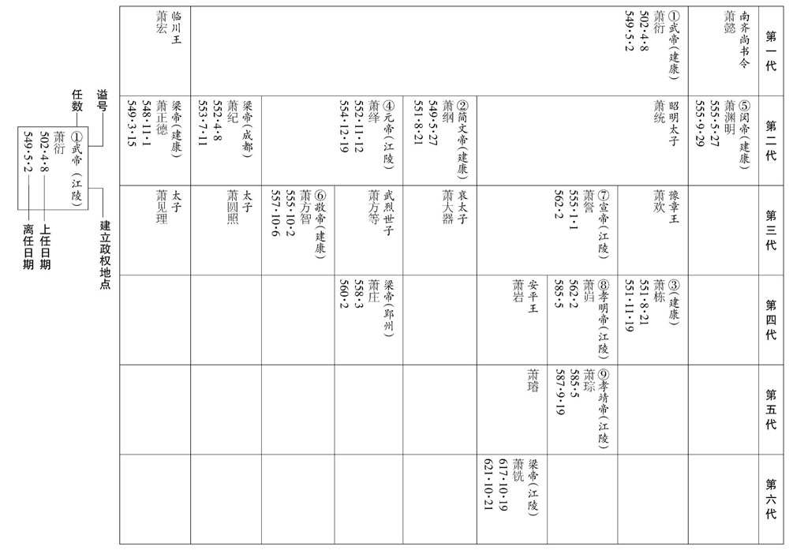
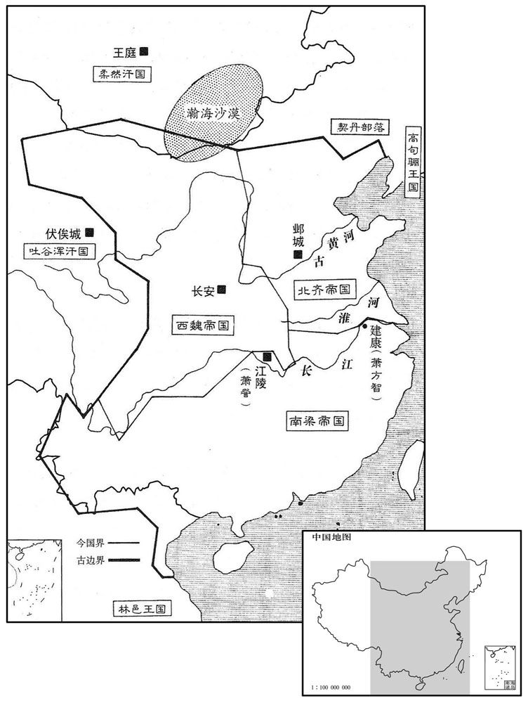
本年形势与背景参考图
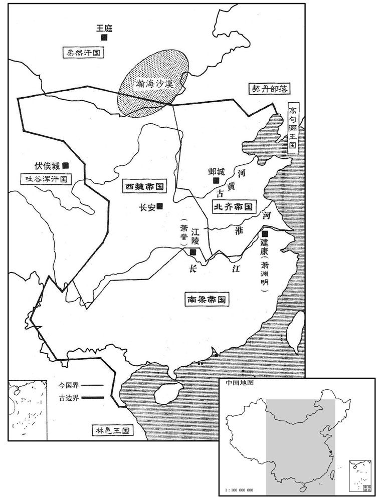
本年形势与背景参考图
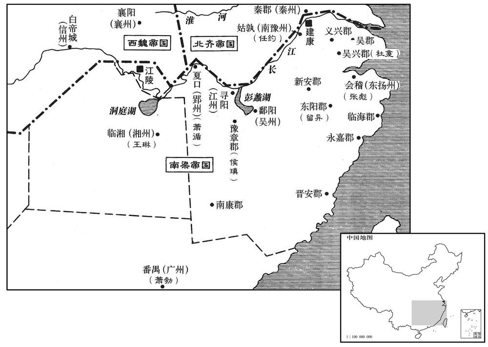
本年形势与背景参考图
梁王詧即皇帝位于江陵，〔詧，字理孙，梁昭明太子之第三子也。考异曰：周书詧传云：「詧在位八载，保定二年薨。」然则詧虽以甲戌年为魏所立，乙亥年乃即位改元也。〕改元大定；追尊昭明太子为昭明皇帝，庙号高宗，妃蔡氏为昭德皇后；尊其母龚氏为皇太后，立妻王氏为皇后，子岿为皇太子。〔岿，区韦翻，又苦鬼翻，又丘愧翻。〕赏刑制度并同王者，唯上疏于魏则称臣，奉其正朔。〔上，时掌翻。〕至于宫爵其下，亦依梁氏之旧，其勋级则兼用柱国等名。〔勋级，置以赏功。柱国，魏所置也，为勋级之首。〕以咨议参军蔡大宝为侍中、尚书令，参掌选事。〔选，须绢翻。〕外兵参军太原王操为五兵尚书。大宝严整有智谋，雅达政事，〔雅，素也。〕文辞赡速，后梁主推心任之，以为谋主，比之诸葛孔明；操亦亚之。追赠邵陵王纶太宰，谥曰壮武；〔邵陵王纶死于大宝二年。〕河东王誉丞相，谥曰武桓。〔河东王誉死于大宝元年。〕以莫勇为武州刺史，魏永寿为巴州刺史，〔武州、巴州皆置于江陵之南岸，二将寻为侯平所擒，不能有二州也。〕
梁王萧在江陵即皇帝位，改年号为大定，追尊昭明太子萧统为昭明皇帝，庙号为高宗，昭明太子的妃子蔡氏被追尊为昭德皇后，尊母亲龚氏为皇太后，立妻子王氏为皇后，儿子萧岿为皇太子。在赏赐刑罚制度方面，都和称王称帝的体制一样，只有在向西魏上疏的时候自称臣，用西魏的历法。至于官制爵位等的颁发，也还依照梁朝的旧制，而给有功之臣定的功勋等级，则兼用西魏设置的柱国等名目。任命谘议参军蔡大宝为侍中、尚书令，参与掌管选拔官员的事情；任命外兵参军太原人王操为五兵尚书。蔡大宝为人严谨整饬有智谋，一向娴熟精通于政事，作文措辞丰沛敏捷，后梁主萧推心置腹地信任他，以他为出谋划策的主角，把他比为诸葛孔明，王操的地位仅次于他。追赠邵陵王萧纶为太宰，谥号为壮武；河东王萧誉为丞相，谥号为武桓。又任命莫勇为武州刺史，魏永寿为巴州刺史。
湘州刺史王琳将兵自小桂北下，〔据姚思廉陈书，小桂，岭名。舆地志：连州桂阳县，汉属桂阳郡，所谓小桂也。〕至蒸城，〔盖汉临蒸县古城也，在衡州界。〕闻江陵已陷，为世祖发哀，三军缟素，〔为，于伪翻。缟，古老翻。〕遣别将侯平帅舟师攻后梁。〔帅，读曰率。〕琳屯兵长沙，传檄州郡，为进取之计。长沙王韶及上游诸将皆推琳为盟主。
湖州刺史王琳带兵从小桂北下，抵达蒸城，听到江陵已经陷落的消息，便为梁元帝萧绎发丧，三军都穿白衣丧服，并派别将侯平率领一支水军去攻打后梁。王琳自己屯兵于长沙，向各州郡发布文告，作进取天下的打算。长沙王萧韶和上游诸将都推举王琳为盟主。
齐主使清河王岳将兵攻安州，〔五代志：安陆郡，西魏置安州。〕以救江陵。岳至义阳，江陵陷，因进军临江，郢州刺史陆法和及仪同三司宋莅举州降之；〔降，户江翻。考异曰：北史「宋莅」作「宋茞」。今从北齐纪。又北齐纪云：「壬寅，岳渡江，克夏首，送法和。」按典略，甲午，齐已召岳还。今从典略。〕长史江夏太守王不从，杀之。〔夏，户雅翻。〕甲午，齐召岳还，使仪同三司清都慕容俨戍郢州。〔北齐书，慕容俨，清都武安人，皝之后也。按魏收地形志，东魏都邺，以魏郡置魏尹，武安县属焉。五代志：齐官有清都尹，盖改魏尹为清都尹也。考异曰：梁纪：「四月，法和降齐，使侯瑱讨之。」按齐主与王僧辩书云：「清河王岳今次汉口，与陆居士相会。」然则法和先已降齐也。今从典略。〕王僧辩遣江州刺史侯瑱攻郢州，任约、徐世谱、宜丰侯循皆引兵会之。〔瑱，他甸翻，又音镇。任，音壬。〕
北齐国主高洋派清河王高岳带兵攻打西魏的安州，以此举救援江陵。高岳进抵义阳，江陵已经陷落，于是挺进到长江边，郢州刺史陆法和与仪同三司宋献出州郡投降，长史江夏太守王珉不顺从，被杀。甲午（十三日），北齐命令高岳回去，派仪同三司清都人慕容俨守卫郢州。王僧辩派江州刺史侯去攻打郢州，任约、徐世谱、宜丰侯萧循等都带兵去会合。
辛丑，齐立贞阳侯渊明为梁主，使其上党王涣将兵送之，〔寒山之败，贞阳没于齐。〕徐陵、湛海珍等皆听从渊明归。〔武帝太清二年，徐陵使魏；魏禅于齐，而梁又有侯景之乱，是以留北。湛海珍降，见一百六十二卷三年。〕
辛丑（二十日），北齐立贞阳侯萧渊明为梁朝的新主，并派上党王高涣带兵送他回南方，徐陵、湛海珍等都听从萧渊明一块回去。
二月，癸丑，晋安王至自寻阳，入居朝堂，〔朝，直遥翻。〕即梁王位，时年十三。以太尉王僧辩为中书监、录尚书、骠骑大将军、都督中外诸军事，〔骠，匹妙翻。骑，奇寄翻。〕加陈霸先征西大将军，以南豫州刺史侯瑱为江州刺史，湘州刺史萧循为太尉，广州刺史萧勃为司徒，镇东将军张彪为郢州刺史。
齐主先使殿中尚书邢子才驰传诣建康，与王僧辩书，以为：「嗣主冲藐，〔传，张恋翻。藐，亡沼翻。〕未堪负荷。〔荷，下可翻，又如字。〕彼贞阳侯，梁武犹子，长沙之胤，〔贞阳虽为缧臣于齐，而贞阳侯则梁爵也，故与僧辩书称「彼贞阳侯」。渊明，长沙王懿之子，武帝兄子，故曰犹子。〕以年以望，堪保金陵，故置为梁主，纳于彼国。卿宜部分舟舰，迎接今主，〔分，扶问翻。舰，户黯翻。〕并心一力，善建良图。」乙卯，贞阳侯渊明亦与僧辩书求迎。僧辩复书曰：「嗣主体自宸极，受于又祖。〔「又」，当作「文」。盖用受终于文祖事。〔【章：乙十一行本正作「文」；孔本同；张校同；退斋校同；十二行本作「父」。】〕明公傥能入朝，同奖王室，〔朝，直遥翻。〕伊、吕之任，佥曰仰归；意在主盟，不敢闻命。」甲子，齐以陆法和为都督荆‧雍等十州诸军事、太尉、大都督、西南道大行台，〔梁置合州于合肥，立南谯郡于襄安县界。襄安，汉之巢县也，梁置蕲县，隋改曰襄安，唐复曰巢县。〕己卯，渊明又与僧辩书，僧辩不从。
两版字句有差异，建议核对原文。
北齐国主高洋在送贞阳侯萧渊明回南方前，先派殿中尚书邢子才飞快地沿驿道去建康，给王僧辩送去一封信。信中认为：“你们立的嗣位的君主年龄幼小，不能承担治国的重任。而那个贞阳侯，是梁武帝的侄子，长沙王萧懿的后代，就他的年龄资望而言，却可以保障金陵不失，所以我把他立为梁朝的主子，送他回南方就国。你应该安排舟舰，去迎接现在的主子，和他同心协力，好好地筹建美好的未来。”乙卯（初四），贞阳侯萧渊明也写信给王僧辩要求来迎接他。王僧辩回信对他说：“当今的嗣主的血统来自皇帝，又受命于祖先。他是合法的嗣主。您如果能到朝廷来当官，一起匡扶王室，那么伊尹、吕望的使命，大家都会说应该归于您了。如果您回朝廷来是想当主子，那么我不能听从这样的命令。”甲子（十三日），北齐任命陆法和为都督荆州、雅州等十州诸军事，太尉，大都督，西南道大行台。又派宋莅当郢州刺史，宋莅的弟弟宋为湘州刺史。甲戌（二十三日），上党王高涣攻克谯郡。乙卯（二十八日），萧渊明又给王僧辩写信去求迎，王僧辩不答应。
魏以右仆射申徽为襄州刺史。〔魏既得梁雍州，改曰襄州，因襄阳以名州也。〕
西魏任命右仆射申徽为襄州刺史。
侯平攻后梁巴、武二州，故刘棻主帅赵朗杀宋文彻，以邵陵归于王琳。〔帅，所类翻。〕
侯平攻打后梁巴州、武州，已故刘的主帅赵朗杀了宋文彻，献出邵陵投归王琳。
三月，贞阳侯渊明至东关，散骑常侍裴之横御之。齐军司尉瑾、仪同三司萧轨南侵皖城，〔晋熙郡怀宁县，汉之皖城也。散，悉亶翻。骑，奇寄翻。皖，户板翻。〕晋州刺史萧惠以州降之。〔降，户江翻。〕齐改晋熙为江州，〔齐晋州治平阳，故此晋州改为江州。〕以尉瑾为刺史。丙戌，齐克东关，斩裴之横，俘数千人；王僧辩大惧，出屯姑孰，谋纳渊明。
三月，贞阳侯萧渊明到了东关，散骑常侍裴之横带兵防御他。北齐军司尉瑾、仪同三司萧轨向南侵犯皖城，晋州刺史萧惠献出州郡投降了。北齐把晋熙改名为江州，任命尉谨当刺史。丙戌（初六），北齐攻克东关，杀了裴之横，俘虏了几千人。王僧辩大惊失色，带兵出城屯驻于姑孰，准备接受萧渊明。
丙申，齐主还邺，封世宗二子孝珩为广宁王，〔珩，音行。〕延宗为安德王。
丙申（十六日），北齐国主高洋回到邺城，封文襄帝的两个儿子高孝珩为广宁王，高延宗为安德王。
孙玚闻江陵陷，弃广州还，〔玚，雉杏翻，又音畅。〕曲江侯勃复据有之。〔去年萧勃避王琳居始兴。复，扶又翻。〕
孙所说江陵陷落，扔下广州回来了，曲江侯萧勃又占据了广州。
魏太师泰遣王克、沈聟等还江南。〔去年，江陵陷，王克等入长安。〕泰得庾季才，厚遇之，令参掌太史。季才散私财，购亲旧之为奴婢者，泰问：「何能如是﹖」对曰：「仆闻克国礼贤，古之道也。〔武王克商，释箕子囚，式商容闾，封比干墓，所谓礼贤也。〕今郢都覆没，其君信有罪矣，〔江陵，楚之故都，古郢城及渚宫皆在其地。〕搢绅何咎，皆为皁隶！〔杜预曰：皁隶，贱官。皁，才早翻。隶，力计翻。〕鄙人羁旅，不敢献言，诚窃哀之，故私购之耳。」泰乃悟曰：「吾之过也！微君，遂失天下之望！」因出令，免梁俘为奴婢者数千口。
西魏太师宇文泰派王克、沈炯等人回江南。宇文泰得了庚季才，给他优厚的待遇，让他参与掌管太史的工作。庚季才拿出自己的私财，为亲朋故旧沦为奴婢的人赎身。宇文泰问：“你怎么能这样仗义疏财？”庾季才回答他说：“我听说攻克一个国家，但对那个国家的贤人要予以礼遇，自古以来都是这样做的。现在郢都覆灭了，他们的君主确实有罪，但他手下的官绅士大夫有什么罪呢，竟然都沦为奴隶！我是羁留在这儿的外人，不敢向您进言，但心里私下为他们的命运感到哀怜，所以才用私财为他们赎身。”宇文泰听了才省悟过来，说：“这都是我的过错呀！要不是你提醒，这就要失去天下人的心了！”于是发布命令，免去梁朝的俘虏当奴婢的惩罚，一下子使几千人得到自由。
夏，四月，庚申，齐主如晋阳。
五月，庚辰，侯平等擒莫勇、魏永寿。江陵之陷也，永嘉王庄生七年矣，〔庄，世子方等之子，元帝之孙。〕尼法慕匿之，〔尼，女夷翻。〕王琳迎庄，送之建康。
五月，庚辰（初一），侯平等抓住了莫勇、魏永寿。当江陵陷落的时候，永嘉王萧庄正好七岁，尼姑法慕把他藏起来收养着，王琳派人去把他接出来，送到了建康。
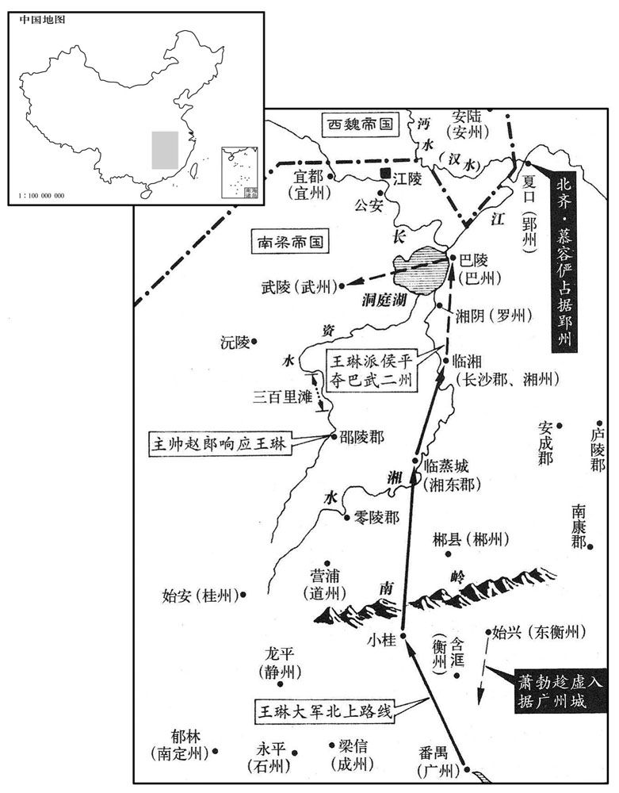
庚寅，齐主还邺。
庚寅（十一日），北齐国主高洋回到了邺城。
王僧辩遣使奉启于贞阳侯渊明，定君臣之礼，又遣别使奉表于齐，〔使，疏吏翻。〕以子显及显母刘氏、弟子世珍为质于渊明，〔质，音致。考异曰：典略：「三月，辛卯，遣廷尉张种等送质于邺。」按渊明五月始入建康，疑太早，恐非。〕遣左民尚书周弘正至历阳奉迎，〔晋武帝太康中，置左民尚书。唐六典：曹魏置左民尚书，晋惠帝置右户尚书。唐户部尚书，即左民、右户之任也。〕因以晋安王为皇太子；渊明许之。渊明求度卫士三千，僧辩虑其为变，止受散卒千人。〔散，苏旱翻。散卒者，赜散之卒，非败散之卒也。败散之散，去声。〕庚子，遣龙舟法驾迎之，渊明与齐上党王涣盟于江北，辛丑，自采石济江。〔考异曰：梁纪：「七月，辛丑，渊明济江。甲辰，入京师。」北齐纪：「五月，萧明入建业。」按典略，「五月，庚子，僧辩逆渊明；辛丑，济江；癸卯，至建康。」今从之。〕于是梁舆南渡，齐师北返。僧辩疑齐，拥懢中流，〔懢，与楫同，棹也；所以拨水行船。拥懢，附船而不鼓，则船定而不进。〕不敢就西岸。齐侍中裴英起卫送渊明，与僧辩会于江宁。癸卯，渊明入建康，望朱雀门而哭，逆者以哭对。丙午，即皇帝位，改元天成，以晋安王为皇太子，王僧辩为大司马，陈霸先为侍中。
王僧辩派使者向贞阳侯萧渊明上表，确定君臣之礼。又派另一使者到北齐去上表，派儿子王显和王显的母亲刘氏、弟弟的儿子王世珍到萧渊明那儿去当人质。又派左民尚书周弘正到历阳去奉迎萧渊明，并要求确立晋安王萧方智为皇太子，萧渊明答应了。萧渊明要求自己的三千名卫士跟着去，王僧辩怕这么多卫士会生出变乱来，因此只接受了一千名冗散的士兵。庚子（二十一日），王僧辩派龙船，备法驾去迎接萧渊明。萧渊明和北齐上党王高涣在长江北边盟誓，辛丑（二十二日），才从采石渡过长江。于是梁朝的车辆南渡，北齐的军队返回北方。王僧辩对北齐军队心存疑惧，把船停在长江中流，不敢靠近西岸。北齐侍中裴英起护送萧渊明南渡，和王僧辩在江宁会面。癸卯（二十四日），萧渊明进入建康，看到朱雀门痛哭失声，去迎接他的群臣也痛哭。丙午（二十七日），萧渊明即皇帝位，改换年号为天成，立晋安王萧方智为皇太子，任命王僧辩为大司马，陈霸先为侍中。
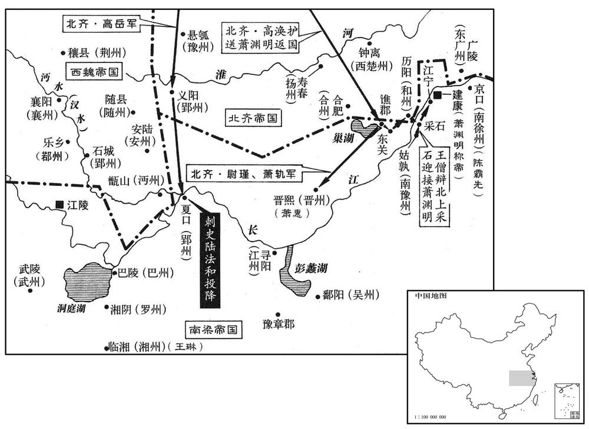
六月，庚戌朔，齐发民一百八十万筑长城，自幽州夏口西至恒州九百余里，〔幽州夏口，盖即居庸下口也。幽州军都县西北有居庸关。湿余水出上谷沮阳县之东，南流出关，谓之下口。「夏」当作「下」。恒，户登翻。〕命定州刺史赵郡王叡将兵监之。叡，琛之子也。〔赵郡王琛，即高永宝，欢之弟也。永宝，琛字。监，工衔翻。琛，丑林翻。〕
六月，庚戌朔（初一），北齐征发民工一百八十万人修筑长城，从幽州夏口向西延伸到恒州，共九百多里长，朝廷任命定州刺史赵郡王高睿带兵去监督工程进展。高睿是高琛的儿子。
齐慕容俨始入郢州而侯瑱等奄至城下，俨随方备御，瑱等不能克；乘间出击瑱等军，大破之。〔间，古苋翻。〕城中食尽，煮草木根叶及靴皮带角食之，〔靴，许戈翻。〕与士卒分甘共苦，坚守半岁，人无异志。贞阳侯渊明立，乃命瑱等解围，瑱还镇豫章。齐人以城在江外难守，因割以还梁。俨归，望齐主，悲不自胜。〔胜，音升。〕齐主呼前，执其手，脱帽看发，叹息久之。
北齐慕容俨刚进入郢州时，侯等人就突然出现在城下，慕容俨按照自己确定的方略进行防备抵御，侯等无法攻克。慕容俨又乘着空隙主动出击侯等人的军队，把他们打得大败。后来城里粮食吃光了，守城军民只好煮草木的棍、叶和靴子的皮、衣带的角等来充饥。慕容俨和士卒同甘共苦，坚守了半年，人们没有动摇、离散的想法。贞阳侯萧渊明即位之后，便命令侯等人撤去对郢州的围困，侯便回去镇守豫章。北齐方面因为郢州城在长江以南，难以防守，就把它割让给了梁朝。慕容俨归国后，望着北齐国主高洋，悲伤得不能自抑。北齐国主叫他走近前来，拉着他的手，脱下他的帽看他的头发，叹息了很久。
吴兴太守杜龛，〔龛，苦含翻。〕王僧辩之伲也。僧辩以吴兴为震州，〔因震泽以为州名。〕用龛为刺史，又以其弟侍中僧愔为豫章太守。〔愔，于今翻。〕
吴兴太守杜龛是王僧辩的女婿。王僧辩把吴兴改为震州，任命杜龛为刺史，又任命自己的弟弟侍中王僧为豫章太守。
壬子，齐主以梁国称藩，诏凡梁民悉遣南还。
壬子（初三），齐主高洋因为梁国自称藩属，依附于北齐，所以下诏凡是梁朝的百姓都遣送回南方。
丁卯，齐主如晋阳；壬申，自将击柔然。〔将，即亮翻。〕秋，七月，己卯，至白道，留辎重，〔重，直用翻。〕帅轻骑五千追柔然，壬午，及之于怀朔镇。齐主亲犯矢石，频战，大破之，至于沃野，获其酋，〔水经注：云中郡有白道岭、白道川。帅，读曰率。骑，奇寄翻。酋，慈秋翻。长，知两翻。〕及生口二万余，牛羊数十万。壬申，〔【章：十二行本「申」作「辰」；乙十一行本同；孔本同；张校同；退斋校同。】〕还晋阳。
丁卯（十八日），北齐国主高洋到晋阳。壬申（二十三日），亲自带兵去打柔然。秋季，七月，己卯（初一），到达白道，留下军用物资，率领轻装骑兵五千人去追击柔然，壬午（初四），在怀朔镇追上了柔然。高洋亲自冒着飞箭飞石，频繁地投入战斗，终于把柔然打得大败，一直追到沃野这地方，捉获了柔然的酋长，还抓了二万多人口，数十万头牛羊。壬申（疑误），才回到晋阳。
八月，辛巳，王琳自蒸城还长沙。
八月，辛巳（疑误），王琳从蒸城回到长沙。
齐主还邺，以佛、道二教不同，欲去其一，集二家〔【章：十二行本「家」下有「学者」二字；乙十一行本同；孔本同。】〕论难于前，〔去，羌吕翻。难，乃旦翻。〕遂敕道士皆剃发为沙门；有不从者，杀四人，乃奉命。于是齐境皆无道士。〔今道家有太霄琅书经云：人行大道，号曰道士。士者何，理也，事也。身心顺理，唯道是从，从道为事，故曰道士。余按此说，是道流智吾儒经解大义以演绎道士二字。道家虽曰宗老子，而西汉以前未尝以道士自名，至东汉始有张道陵、于吉等，其实与佛教皆起于东汉之时。〕
北齐国主高洋回到邺城，他因为佛、道二教教义教规都不同，便想除去一个，就把两教中的学者集中在一起，让他们在自己面前互相辩难，于是就敕令道士都剃掉头发当和尚。有人不服从，杀了四人，才都奉行了这道命令，于是北齐境内就没有道士了。
初，王僧辩与陈霸先共灭侯景，〔见一百六十四卷世祖承圣元年。〕情好甚笃，僧辩为子頠娶霸先女，〔好，呼到翻。为，于伪翻。頠，鱼委翻。〕会僧辩有母丧，未成婚。僧辩居石头城，霸先在京口，僧辩推心待之，頠兄顗屡谏，不听。〔顗，鱼岂翻。〕及僧辩纳贞阳侯渊明，霸先遣使苦争之，〔使，疏吏翻。〕往返数四，僧辩不从。霸先窃叹，谓所亲曰：「武帝子孙甚多，唯孝元能复雠雪耻，〔谓诛灭侯景也。〕其子何罪，而忽废之！吾与王公并处托孤之地，〔处，昌吕翻。〕而王公一旦改图，外依戎狄，援立非次，其志欲何所为乎！」〔僧辩立渊明，名不正而言不顺，故奸雄得因以为资。〕乃密具袍数千领及锦彩金银为赏赐之具。
当初，王僧辩和陈霸先共同消灭了侯景，两人感情很是深固。王僧辩为儿子王迎娶陈霸先的女儿，正赶上王僧辩母亲去世，所以没有成婚。王僧辩居住在石头城，陈霸先在京口，王僧辩推心置腹地对待陈霸先，王的哥哥王多次劝他要有所提防，王僧辩不听。等到王增辩迎纳贞阳侯萧渊明为帝时，陈霸先派使者苦苦劝阻，争辩不休，使者为此往返了几趟，王僧辩不听。陈霸先私下叹息，对他的亲信说：“武帝的子孙很多，只有孝元帝能平定侯景之乱，为祖宗报仇雪耻。他的儿子有什么罪，突然就废了他！我和王公僧辩共同处于先帝托孤的重臣的地位，而王公僧辩现在一下子改变主意，对外依附戎狄之邦，不按次序立天子，他到底想干什么呢？”于是秘密准备战袍几千领和锦采金银等等作为赏赐部下的物品，准备起事。
会有告齐师大举至寿春将入寇者，僧辩遣记室江旰告霸先，使为之备。霸先因是留旰于京口，〔旰，古汗翻。〕举兵袭僧辩。九月，壬寅，召部将侯安都、周文育及安陆徐度、钱塘杜棱谋之。〔将，即亮翻；下同。〕棱以为难，霸先惧其谋泄，以手巾绞棱，〔今人盥洗，以布拭手，长七八尺，谓之手巾。〕闷绝于地，因闭于别室。部分将士，〔分，扶问翻。〕分赐金帛，以弟子著作郎昙朗镇京口，知留府事，〔昙朗，霸先母弟休先之子。昙，徒含翻。〕使徐度、侯安都帅水军趋石头，〔帅，所类翻；下同。趋，七喻翻。〕霸先帅马步自江乘罗落会之，〔江乘罗落，江乘县之罗落桥。自江乘至罗落桥，京口趋建康之大路，刘裕伐桓玄由此。〕是夜，皆发，召杜棱与同行。知其谋者，唯安都等四将，外人皆以为江旰征兵御齐，不之怪也。
正好这时有人来报告，北齐军队进行大调动，已经到达了寿春，将要向南进犯。王僧辩派记室江旰通知陈霸先，让他有所戒备。陈霸先借这个机会把江旰扣留在京口，举兵袭击王僧辩。九月，壬寅（二十五日），陈霸先召集部将侯安都、周文育以及安陆人徐度、钱塘人杜棱一起密谋策划。杜棱认为这事很难进行，陈霸先害怕秘密泄漏，用手巾绞住杜棱，使他闷绝在地上，然后把他关在另一间屋子里，接着就部署将士，分赐金银布帛，命令自己弟弟的儿子著作郎陈昙朗留下来镇守京口，掌管州府政事，又派徐度、侯安都率领水军直逼石头，陈霸先自己率领骑兵、步兵从江乘、罗落这条路线去与之会合。当天夜里，各路兵马都出发了，并带着杜棱随军同行。知道这次进军的真正目的的人，只有侯安都等四个将领，外人都以为是江旰来征调军队抵抗北齐的进犯，对军队的出动一点也不感到奇怪。
甲辰，安都引舟舰将趣石头，〔舰，户黯翻。趣，七喻翻。〕霸先控马未进，安都大惧，追霸先骂曰：「今日作贼，事势已成，生死须决，在后欲何所望！若败，俱死，后期得免斫头邪﹖」霸先曰：「安都嗔我！」乃进。〔霸先控马踟蹰，以观安都之意，见安都决死前向，乃进。嗔，昌真翻，恚怒也。〕安都至石头城北，弃舟登岸。石头城北接冈阜，不甚危峻，安都被甲带长刀，军人捧之，投于女垣内，〔被，皮义翻。女垣，城上堞也。〕众随而入，进及僧辩卧室；霸先兵亦自南门入。僧辩方视事，外白有兵，俄而兵自内出。僧辩遽走，遇子頠，与俱出合，帅左右数十人苦战于听事前，〔听，读曰厅。〕力不敌，走登南门楼，拜请求哀。霸先欲纵火焚之，僧辩与頠俱下就执。霸先曰：「我有何辜，公欲与齐师赐讨﹖」且曰：「何意全无备﹖」僧辩曰：「委公北门，何谓无备﹖」〔京口为建康北门。〕是夜，霸先缢杀僧辩父子。既而竟无齐兵，亦非霸先之谲也。〔谲，古穴翻。〕前青州刺史新安程灵洗帅所领救僧辩，力战于石头西门，军败；霸先遣使招谕，久之乃降。〔使，疏吏翻。降，户江翻。〕霸先深义之，以为兰陵太守，使助防京口。〔守，式又翻。〕乙巳，霸先为檄布告中外，列僧辩罪状，且曰：「资斧所指，唯王僧辩父子兄弟，其余亲党，一无所问。」
甲辰（二十七日），侯安都指挥舟舰将奔袭石头，陈霸先有意勒马不进。侯安都以为陈霸先临事犹豫，心中大惊，就追上陈霸先大骂：“今天我们造反，事到临头，已经无法挽回了，是生是死必须作出决断，你迟疑不进，留在后头，存的什么念头！如果失败，咱们都得死，留在后头就能免去砍头吗？”陈霸先一听心中暗自高兴，说：“侯安都在怪我不下决心、生我的气呢！”于是带兵前进。侯安都到了石头城的北边，扔下船上了岸。石头城北边和山冈高坡相连，城墙不太高峻，侯安都披着盔甲，手握长刀，让手下军人把他抬起来扔到城墙上，众人随着他蜂拥而入，一直进到王僧辩卧室。陈霸先的队伍也从南门攻入了。王僧辩正在处理军政事务，外面有人说士兵袭击，过一会儿士兵从里头冒了出来，王僧辩急忙逃跑，遇到儿子王，和他一起冲出门外，率身边几十人在议事厅前面苦战，力竭不敌，跑到南门楼上，向进逼过来的陈霸先拜请乞求哀怜。陈霸先要放火烧南门楼，王僧辩和王都下楼就擒。陈霸先质问说：“我有什么过错，你要和北齐军队一起讨伐我？”而且还问：“北齐军队来犯，你全无戒备，是什么意思？”王僧辩有点莫名其妙，回答说：“派你守京口，扼据建康北门，怎么说我对北齐军队没有戎备？”当天夜里，陈霸先把王僧辩父子两人绞杀了。后来，竟没有发现北齐军队的影子，看来，这也并不是陈霸先玩弄诡计。前青州刺史新安人程灵洗率领所部将士来救王僧辩，在石头西门奋力苦战，终于兵败。陈霸先派使者去招谕他，过了很久，他才投降了。陈霸先被程灵洗的义气深深感动，任命他为兰陵太守，让他协助防守京口。乙巳（二十八日），陈霸先发布檄文，通告中外，举列王僧辩的罪过，说明为什么要讨伐他。檄文中还说：“我所要讨伐的，只是王僧辩父子兄弟，至于其他王氏亲戚党羽，一概不加问罪。”
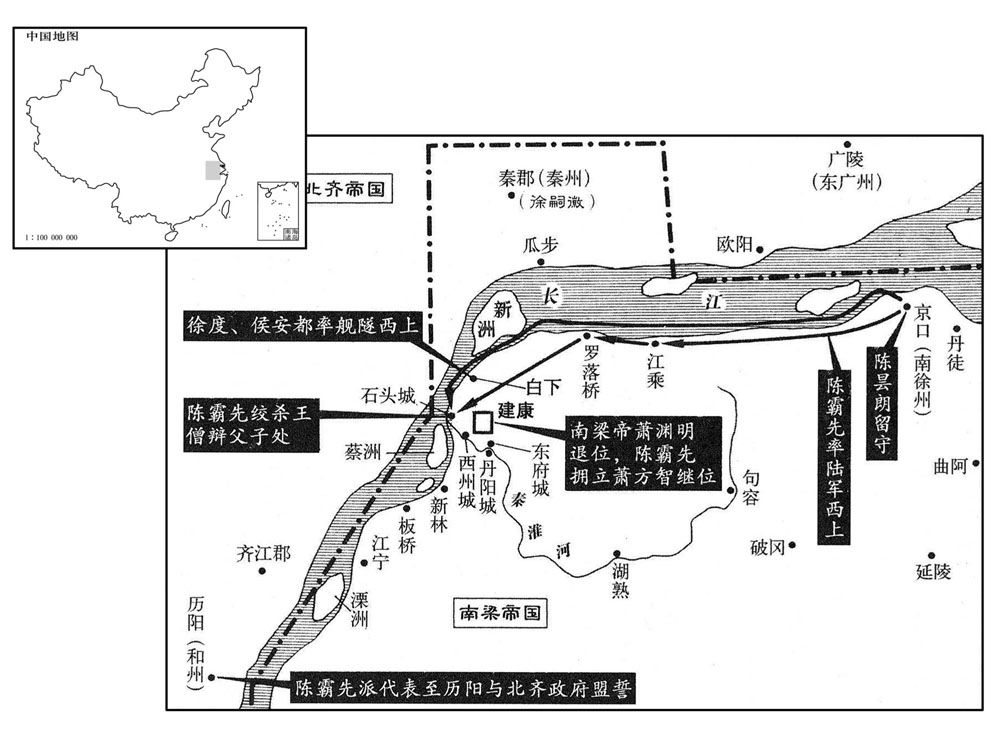
丙午，贞阳侯渊明逊位，出就邸，〔考异曰：梁书：「九月，丙午，帝即皇帝位。十月，己巳，大赦，改元。」按长历，丙午，九月二十九日；己巳，十月二十二日。岂有即位二十四日始改元大赦乎！盖丙午复梁王位，十月乃即帝位耳。典略：「丁未，废贞阳侯出就邸。」今并从陈书。〕百僚上晋安王表，劝进。〔上，时掌翻。〕冬，十月，己酉，晋安王即皇帝位，大赦，改元，〔改元绍泰。〕中外文武赐位一等。以贞阳侯渊明为司徒，封建安公。告齐云：「僧辩阴图篡逆，故诛之，仍请称臣于齐，永为藩国。」齐遣行台司马恭与梁人盟于历阳。
丙午（二十九日），贞阳侯萧渊明退位，搬出官廷回自己的官邸。百官上表给晋安王萧方智，劝他登基。冬季，十月，己酉（初二），晋安王萧方智即皇帝位，大赦天下，改换年号为绍泰，对朝廷内外文武百官都赏赐一级官位。任命贞阳侯萧渊明为司徒，封为建安公。派人通报北齐，说：“王僧辩阴谋篡位造反，所以杀了他。”仍然请求向北齐称臣，永远当北齐的附属国。北齐派行台司马恭和梁朝人在历阳订立了盟约。
辛亥，齐主如晋阳。
辛亥（初四），北齐国主高洋到了晋阳。
壬子，加陈霸先尚书令、都督中外诸军事、车骑将军、扬‧南徐二州刺史。癸丑，以宜丰侯循为太保，建安公渊明为太傅，曲江侯勃为太尉，王琳为车骑将军、开府仪同三司。〔帝之初为梁王也，诸藩皆进官，独不及王琳，抑王僧辩雅知王琳之不可制邪！〕
壬子（初五），梁朝加封陈霸先为尚书令，都督中外诸军事，车骑将军，扬、南徐二州刺史。癸丑（初六），任命宜丰侯萧循为太保，建安公萧渊明为太傅，曲江侯萧勃为太尉，王琳为车骑将军，开府仪同三司。
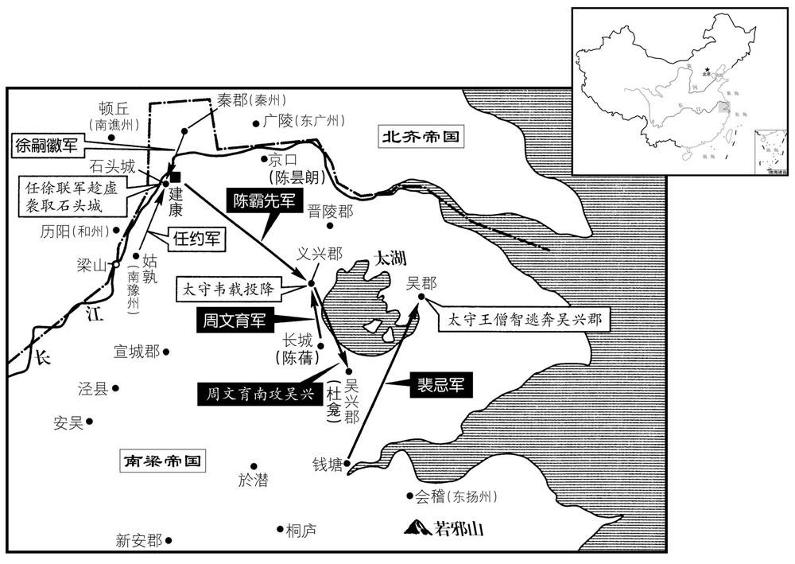
戊午，尊帝所生夏贵妃为皇太后，〔夏，户雅翻。〕立妃王氏为皇后。
戊午（十一日），梁朝尊奉皇帝萧方智的生母夏贵妃为皇太后，立妃子王氏为皇后。
杜龛恃王僧辩之势，〔龛，苦含翻。〕素不礼于陈霸先，在吴兴，每以法绳其宗族，霸先深怨之。及将图僧辩，密使兄子蒨还长城，〔长城县，霸先与其宗族世居之。晋太康三年，分乌程立长城县，属吴兴郡，今湖州长兴县是也，在湖州西北七十里。蒨，七见翻。〕立栅以备龛。僧辩死，龛据吴兴拒霸先，义兴太守韦载以郡应之。〔考异曰：典略作「韦载」。今从梁、陈书。今按典略若作「韦载」，则与梁、陈书同，不须考异矣。〕吴郡太守王僧智，僧辩之弟也，亦据城拒守。〔考异曰：南史云，「僧智奔任约。」今从典略。〕陈菁至长城，收兵纔数百人，杜龛遣其将杜泰将精兵五千奄至，将士相视失色。〔将，即亮翻；下同。〕蒨言笑自若，部分益明，〔分，扶问翻。〕众心乃定。泰昼夜苦攻，数旬，不克而退。霸先使周文育攻义兴，义兴属县卒皆霸先旧兵，善用弩，韦载收得数十人，系以长锁，命所亲监之，〔监，工衔翻。〕使射文育军，约曰：「十射不两中者死。」〔射，而亦翻。中，竹仲翻。〕故每发辄毙一人，文育军稍却。载因于城外据水立栅，相持数旬。杜龛遣其从弟北叟将兵拒战，〔从，才用翻；下同。〕北叟败，归于义兴。霸先闻文育军不利，辛未，自表东讨，留高州刺史侯安都、石州刺史杜棱宿卫台省。〔五代志：永平郡，梁置石州，隋后改曰藤州。宋白曰：藤州，治镡津县，汉猛陵县也。〕甲戌，军至义兴，丙子，拔其水栅。
杜龛依恃王僧辩的权势，一向对陈霸先很不礼貌。在吴兴，他常常对陈霸先宗族中的人绳之以法，陈霸先因此对他深怀怨恨。待到陈霸先要算计王僧辩的时候，便秘密地派他的侄子陈潜回长城县，修筑营栅以防备杜龛。王僧辩死后，杜龛占据吴兴抗拒陈霸先，义兴太守韦载带他郡中的部队起来响应。吴郡太守王僧智是王僧辩的弟弟，也据城固守以作抗拒。陈到长城县后，召集的士兵才有几百人，杜龛派他的部将杜泰带精兵五千人突然到来，陈的将士们面面相觑，大惊失色。陈却谈笑自若，部署分派军队，越发清楚明确，于是众人才心神安定下来。杜泰昼夜苦攻，持续了几十天，打不下来就退走了。陈霸先派周文育去攻打义兴，义兴所属各县的士卒都是陈霸先的旧部，善于使用弩箭，韦载找出了几十人，用长长的锁链把他们系在一起，派亲信监督他们用箭射周文育的军队，并规定“谁如果十箭中不能射中两箭，就处死。”所以每发箭出去就射死一个人，周文育的军队这才稍稍退却了。韦载乘势在城外靠水边建立营栅，和周文育相持了几十天。杜龛派他的堂弟杜北叟带兵抗战，杜北叟兵败，回到义兴。陈霸先听到周文育进攻受挫的消息，辛未（二十四日），宣布自己亲自带兵东伐，留下高州刺史侯安都、石州刺史杜棱守卫台省。甲戌（二十七日），陈霸先军队抵达义兴，丙子（二十九日），拔除了韦载修筑的水栅。
谯、秦二州刺史徐嗣徽从弟嗣先，僧辩之甥也。僧辩死，嗣先亡就嗣徽，嗣徽以州入于齐。〔五代志：江都郡清流县，梁置新昌郡及谯州。又，六合县，置泰郡及秦州。〕及陈霸先东讨义兴，嗣徽密结南豫州刺史任约，将精兵五千乘虚袭建康，是日，袭据石头，游骑至阙下。侯安都闭门藏旗帜，示之以弱，令城中曰：「登陴窥贼者斩！」〔帜，昌志翻。陴，频弥翻。〕及夕，嗣徽等收兵还石头。安都夜为战备，将旦，嗣等又至，安都帅甲士三百开东、西掖门出战，〔台城正南端门，其左、右二门曰东、西掖门。帅，读曰率。〕大破之，嗣徽等奔还石头，不敢复逼台城。〔复，扶又翻。〕
谯、秦二州的刺史徐嗣徽的堂弟徐嗣先是王僧辩的外甥。王僧辩死后，徐嗣先逃亡到徐嗣徽处，徐嗣徽干脆献上谯秦二州，投靠了北齐。待到陈霸先东讨义兴时，徐嗣徽秘密联合南豫州刺史任约，带精兵五千人乘虚偷袭建康。这一天，终于袭击占领了石头，冲在前面的游骑已到了台城宫阙之下。侯安都关上大门，藏起旗帜，有意以此表示自己怯弱，同时告诫城中士兵：“凡登高窥探贼兵者一律处斩。”到天黑，徐嗣徽等人收兵回石头。侯安都夜里作了充分的战斗准备，天快亮时，徐嗣徽等人又来进攻，侯安都率领甲士三百人打开东、西侧门出城迎战，大败敌军，徐嗣徽等人奔逃回石头，再也不敢逼近台城了。
陈霸先遣韦载族弟翙赍书谕载，〔翙，呼会翻。〕丁丑，载及杜北叟皆降，〔降，户江翻。〕霸先厚抚之，以翙监义兴郡，〔监，工衔翻。〕引载置左右，与之谋议。霸先卷甲还建康，〔卷，读曰卷。考异曰：梁书：「十一月，庚寅，霸先还建康。」按庚寅，十一月十三日，太晚。且庚寅以前，霸先已有在建康与齐相拒事迹。今从陈书。〕使周文育讨杜龛，救长城。
陈霸先派韦载的族弟韦携带书信去说服韦载投降。丁丑（三十日），韦载和杜北叟都投降了。陈霸先对待他们很优厚，极力安抚他们，让韦监管义兴郡，把韦载安置在自己身边，视为亲信，有事让他参与谋议。陈霸先平定义兴后，就收兵回建康，派周文育去讨伐杜龛，救援长城县。
将军黄他攻王僧智于吴郡，不克，霸筅使宁远将军裴忌助之。忌选所部精兵轻行倍道，自钱塘直趣吴郡，〔按陈霸先自义兴还建康，遣裴忌助黄他攻吴郡，自钱塘直趣吴郡，非路也，钱塘必误。趣，七喻翻。〕夜，至城下，鼓噪薄之。〔薄，伯各翻。〕僧智以为大军至，轻舟奔吴兴。忌入据吴郡，因以忌为太守。
将军黄他在吴郡攻打王僧智，打不下来，陈霸先派宁远将军裴忌去帮助他。裴忌挑选部属中的精兵轻装倍速前进，从钱塘直奔吴郡。夜里，抵达城下，大声鼓噪着逼进城墙。王僧智以为大部队来了，急忙乘着小船逃到吴兴去了。裴忌攻占了吴郡，陈霸先任命裴忌为吴郡太守。
十一月，己卯，齐遣兵五千渡江据姑孰，以应徐嗣徽、任约。陈霸先使合州刺史徐度立栅于冶城。庚寅，〔【章：乙十一行本「寅」作「辰」；退斋校同。】〕齐又遣安州刺史翟子崇、楚州刺史刘士荣、淮州刺史柳达摩〔五代志：锺离郡，梁置北徐州，齐改曰楚州，管下定远县，梁置安州。江都郡山阳县有淮阴郡，东魏置淮州。翟，直格翻。〕将兵万人于胡墅度米三万石、马千匹入石头。〔胡墅，在大江北岸，对石头城。墅，神与翻。〕霸先问计于韦载，载曰：「齐师若分兵先据三吴之路，略地东境，则时事去矣。今可急于淮南因侯景故垒筑城，以通东道转输，〔淮南，秦淮之南也。输，式喻翻；下运输同。〕分兵绝彼之粮运，则〔【章：十二行本「则」上有「使进无所资」五字；乙十一行本同；孔本同；张校同。】〕齐将之首旬日可致。」〔将，即亮翻。〕霸先从之。癸未，使侯安都夜袭胡墅，〔考异曰：典略作「己巳」。按长历，是月戊寅朔，无己巳。今从陈书。〕烧齐船千余艘；〔艘，苏遭翻。〕仁威将军周铁虎断齐运输，〔断，音短。〕擒其北徐州刺史张领州；〔五代志：琅邪郡，旧置北徐州。〕仍遣韦载于大航筑侯景故垒，使杜棱守之。〔航，户刚翻。〕齐人于仓门、水南立二栅，〔仓门，石头仓城门。水南，秦淮水之南。〕与梁兵相拒。壬辰，齐大都督萧轨将兵屯江北。
十一月，己卯（初二），北齐派兵五千渡过长江占据姑孰，以策应徐嗣徽、任约。陈霸先派合州刺史徐度在冶城修筑栅栏。庚寅（十三日），北齐又派安州刺史翟子崇、楚州刺史刘士荣、淮州刺史柳达摩带兵一万在胡墅运米三万石、马一千匹到石头城。陈霸先向韦载征询对策，韦载说：“齐军如果分兵先占据通往三吴的道路，然后在我们东边的边境攻城占地，那么时局就完了。现在齐军没有这样做，我们可以赶快在淮南一带沿着侯景过去留下的旧垒修筑新城堡，以便打通东边的运输道路。同时分出一支军队去断绝他们运粮的道路，这样，齐将的首领十天之内就得送来了。”陈霸先听从了他的计策。癸未（初六），陈霸先派侯安都夜袭胡墅，烧掉了北齐一千多艘兵船；仁威将军周铁虎切断了北齐运输补给的道路，抓住了他们的北徐州刺史张领州；仍然让韦载在大航修筑侯景的故垒，让杜棱去守卫。北齐军队在仓门和秦淮河之南修建了两座营栅，与梁兵对抗。壬辰（十五日），北齐大都督萧轨带兵屯驻在长江北岸。
初，齐平秦王归彦幼孤，高祖令清河昭武王岳养之，〔归彦，高欢族弟也。归彦父徽，于欢有旧恩，故欢怜其孤而命岳养之。欢庙号高祖。〕岳情礼甚薄，归彦心衔之。及显祖即位，归彦为领军大将军，大被宠遇；〔被，皮义翻。〕岳谓其德己，更倚赖之。岳屡将兵立功，有威名，而性豪侈，好酒色，〔好，呼到翻。〕起第于城南，〔城南，邺城之南。〕听事后开巷。〔听，读曰厅。〕归彦谮之于帝曰：「清河僭拟宫禁，制为永巷，但无阙耳。」帝由是恶之。〔恶，乌路翻。〕帝纳倡薛氏于后宫，〔倡，尺良翻，优也。〕岳先尝因其姊迎之至第。帝夜游于薛氏家，其姊为其父乞司徒。〔为，于伪翻。〕帝大怒，悬其姊，锯杀之。让岳以奸，岳不服，帝益怒，乙亥，使归彦鸩岳。岳自诉无罪，归彦曰：「饮之则家全。」饮之而卒，葬赠如礼。
当初，北齐平秦王高归彦幼小时成了孤儿，高祖高欢命令清河昭武王高岳抚养他。高岳对高归彦寡情薄礼，所以高归彦心里恨他。待到文宣帝高洋即位，高归彦当了领军大将军，很受宠爱。高岳认为高归彦会感激自己的抚育之恩，所以对他更是倚赖。高岳多次带兵立功，威名赫赫，而又性格豪放奢侈，喜欢醇酒女色，在城南修建了大宅第，并在办公视事的大厅后头开了一条巷子。高归彦在文宣帝那儿进谗言，说：“清河昭武王高岳私自模拟宫禁的建筑式样，修了一条永巷，只是没有修阙门罢了。”文宣帝从此厌恶高岳。文宣帝把娼妇薛氏接进后宫，高岳早先曾托薛氏的姐姐把薛氏接到家里。有一天夜里，文宣帝到薛氏的家里去，薛氏的姐姐替她父亲要求赐给司徒的官位。文宣帝勃然大怒，就把薛氏姐姐吊起来，用锯子锯成了两段。文宣帝责备高岳奸淫薛氏，高岳不服气，文宣帝更加生气了，乙亥（疑误），派高归彦去毒死高岳。高岳申诉自己没有罪，高归彦说：“你把这毒酒喝下去了，全家就可以保全。”高岳只好把毒酒喝了，他死之后，朝廷按礼仪加以埋葬。
薛嫔有宠于帝，〔嫔，毗宾翻。〕久之，帝忽思其与岳通，无故斩首，藏之于怀，出东山宴饮。劝酬始合，忽探出其首，投于柈上，〔探，吐南翻。柈，蒲官翻。〕支解其尸，弄其髀为琵琶，一座大惊。帝方收取，对之流涕曰：「佳人难再得！」〔汉李延年歌曰：「北方有佳人，绝世而独立，一顾倾人城，再顾倾人国。宁不知倾城与倾国，佳人难再得！」〕载尸以出，被发步哭而随之。〔被，皮义翻。〕
薛嫔很得文宣帝宠爱，很久之后，文宣帝忽然想起她曾和高岳通奸，无缘无故就将她斩首，然后把她的头藏在怀里，到东山去宴饮作乐。大家正在互相劝酒应酬，文宣帝忽然用手探怀，拿出薛氏的头扔到桌上，又把她的尸体支解开，将她的髀骨充作琵琶弹弄，举座见状大惊。文宣帝这才把薛氏的头和髀骨收起来，对着它们流下泪来，说：“佳人难再得！”他让人用车把薛氏尸体运出去，自己披散头发，边走边哭地跟着。
甲辰，徐嗣徽等攻冶城栅，陈霸先将精甲自西明门出击之，嗣徽等大败，留柳达摩等守城，自往采石迎齐援。
甲辰（二十七日），徐嗣徽等进攻冶城的营栅，陈霸先率领精兵从西明门出来迎击，徐嗣徽等人大败，留下柳达摩等人守城，自己去采石迎接北齐援兵。
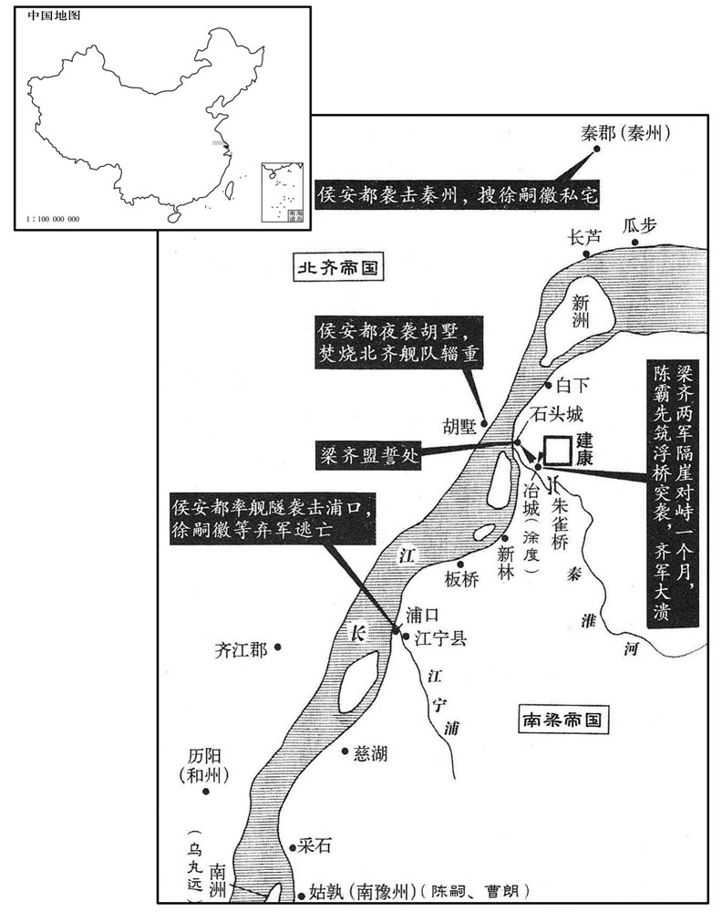
以郢州刺史宜丰侯循为太保，广州刺史曲江侯勃为司空，并征入侍。循受太保而辞不入。勃方谋举兵，遂不受命。
梁朝任命郢州刺史宜丰侯萧循为太保，广州刺史曲江侯萧勃为司空，把他们二人一起征召入朝侍奉皇帝。萧循接受了太保之职，但借故推辞不入朝。萧勃正密谋起兵造反，于是不接受任命。
镇南将军王琳侵魏，魏大将军豆卢宁御之。〔姓氏志：豆卢本姓慕容氏，燕北地王精降魏，北人谓归义为豆卢，因赐以为氏。〕
本段缺少可靠对应白话，原文完整保留；未使用生成译文。
十二月，癸丑，侯安都袭秦郡，破徐嗣徽栅，俘数百人。收其家，得其琵琶及鹰，遣使送之曰：「昨至弟处得此，今以相还。」〔使，疏吏翻；下同。〕嗣徽大惧。丙辰，陈霸先对冶城立航，〔航，户刚翻，连舟为桥也。〕悉渡众军，攻其水南二栅。〔即仓门、水南二栅。〕柳达摩等渡淮置陈，〔陈，读曰阵。〕霸先督兵疾战，纵火烧栅，齐兵大败，争舟相挤，〔挤，笺西翻，又子细翻。〕溺水者以千数，呼声震天地，〔溺，奴狄翻。呼，火故翻。〕尽收其船舰。是日，嗣徽与任约引齐兵水步万余人还据石头，霸先遣兵诣江宁，据要险。嗣徽等水步不敢进，顿江宁浦口，霸先遣侯安都将水军袭破之，嗣徽等单舸脱走，〔舸，古我翻。〕尽收其军资器械。
十二月，癸丑（初七），侯安都袭击秦郡，攻破徐嗣徽的营栅，俘获了好几百人。又抄了他的家产，搜得他用的琵琶和养的鹰，派人送给徐嗣徽，并说 ：“昨天到老弟家里得到这点东西，现在特地送去还你。”徐嗣徽看到东西，大惊失色。丙辰（初十），陈霸先在冶城对面的水上把船只连在一起建了一座浮桥，指挥众军全部渡过去，攻击修在南边的两座营栅。柳达摩等渡过秦淮河摆开阵势，陈霸先督率战士猛烈进攻，并放火烧栅栏，北齐军队大败，争着上船逃跑，互相拥挤，掉入水中淹死的有上千人，哭喊声震天动地，北齐军队的船舰全部被缴获。当天，徐嗣徽和任约带领北齐水师步兵一万多人退回去据守石头，陈霸先派兵来到江宁，占据了险要之地。徐嗣徽等人的水师步兵都不敢前进，停顿在江宁浦的入江之处。陈霸先派侯安都带水军去袭击打败了他们，徐嗣徽等人乘上单人小船逃走，他们的辎重、武器全部被缴获。
己未，霸先四面攻石头，城中无水，升水直绢一匹。庚申，达摩遣使请和于霸先，且求质子。〔请和而求质子者，恐还以无功得罪，欲以质子藉手。质，音致。〕时建康虚弱，粮运不继，朝臣皆欲与齐和，〔朝，直遥翻。〕请以霸先从子昙朗为质。〔昙朗时留镇京口。从，才用翻。昙，苦含翻。〕霸先曰：「今在位诸贤欲息肩于齐，〔左传：郑成公疾，子驷请息肩于晋。杜预注曰：以负担谕。〕若违众议，谓孤爱昙朗，不恤国家，今决遣昙朗，弃之寇庭。齐人无信，谓我微弱，必当背盟。〔背，蒲妹翻。〕齐寇若来，诸君须为孤力鬬也！」〔霸先知齐人耻于无功，必增兵复至，故先以此谕众，责其效死。为，于伪翻。〕乃与昙朗及永嘉王庄、丹杨尹王冲之子为质，〔「与」，当作「以」，则文意明顺。〔【章：乙十一行本正作「以」；退斋校同。】〕与齐人盟于城外，〔城外者，石头城外。〕将士恣其南北。〔徐嗣徽等南人恣其南，柳达摩等北人恣其北。恣其南北，言唯意所适也。〕辛酉，霸先陈兵石头南门，送齐人归北，徐嗣徽、任约皆奔齐。收齐马仗船米，不可胜计。〔胜，音升。〕齐主诛柳达摩。壬戌，齐和州长史乌丸远南州奔还历阳。〔刘昫曰：齐、梁通和，置和州于历阳郡。乌丸盖出于东胡乌丸之种，因以为姓。〕
己未（十三日），陈霸先从四面包围攻打石头，城中没有水喝，一升水昂贵到值一匹绢。庚申（十四日），柳达摩派使者向陈霸先求和，而且请求以儿子为人质。当时建康实力虚弱，粮草运输跟不上，朝廷中的大臣都想与北齐讲和，纷纷请求用陈霸先的侄子陈昙朗为人质。陈霸先说：“现在在朝廷中的各位贤人都想和北齐讲和以获得休息，如果我违反众人的意见，大家会说我偏爱陈昙朗，不顾念国家利益。现在我决定派陈昙朗去，就算把他扔在敌寇的庭院里吧！北齐人一向不守信用，我答应讲和，他们会认为我们势微力弱好欺负，肯定会背弃盟约再来进犯。北齐强盗如果再来进犯，那时你们可得为我拼死战斗呀！”于是就把陈昙朗和永嘉王萧庄、丹杨府尹王冲的儿子王珉作人质，与北齐人在城外订立了和约，允许追随北齐的将士按自己的意愿选择归居南方或北方。辛酉（十五日），陈霸先在石头南门摆列兵阵，送北齐军队北归。徐嗣徽、任约都投奔了北齐。这一仗，缴获北齐军马、器械、舟船、大米，不可胜数。北齐国主高洋杀了败将柳达摩。壬戍（十六日），北齐和州长史乌丸远从南州奔逃回到历阳。
江宁令陈嗣、黄门侍郎曹朗据姑孰反，霸先命侯安都等讨平之。霸先恐陈昙朗亡窜，自帅步骑至京口迎之。〔帅，读曰率。〕
江宁县令陈嗣、黄门侍郎黄朗占据姑孰谋反，陈霸先派侯安都等人出兵讨伐，平定了他们。陈霸先担心陈昙朗逃跑流窜到别处去，便亲自率领步、骑兵到京口去迎接他。
交州刺史刘元偃帅其属数千人归王琳。
交州刺史刘元偃率领部属几千人去投奔王琳。
魏以侍中李远为尚书左仆射。
西魏任命侍中李远为尚书左仆射。
魏益州刺史宇文贵使谯淹从子子嗣诱说淹，以为大将军，〔从，才用翻。说，式芮翻。〕淹不从，斩子嗣。贵怒，攻之，淹自东遂宁徙屯垫江。〔晋于德阳县界东南置遂宁郡。五代志：遂宁郡方义县，梁曰小溪，置东遂宁郡。垫江县，汉属巴郡，梁为楚州治所，隋为渝州。垫，音迭。〕
初，晋安民陈羽，〔吴立东安县，晋武帝更名晋安。太康三年，分建安立晋安郡。五代志：建安郡南安县旧曰晋安。今之泉州即其地。〕世为闽中豪姓，其子宝应多权诈，郡中畏服。侯景之乱，晋安太守宾化侯云以郡让羽，羽老，但治郡事，今宝应典兵。时东境荒馑，而晋安独丰衍，宝应数自海道出，寇抄临安、永嘉、会稽，〔沈约志：吴分余杭为临水县，晋武帝太康元年更名临安。五代志无临安郡及临安县，但有余杭郡耳。数，所角翻。抄，楚交翻。会，工外翻。〕或载米粟与之贸易，由是能致富强。侯景平，世祖因以羽为晋安太守。及陈霸先辅政，羽求传位于宝应，霸先许之。〔为后陈宝应乱闽中张本。〕
两版字句有差异，建议核对原文。
当初，晋安地区的平民陈羽，世世代代为闽中豪门。他的儿子陈宝应颇善权变，为人奸诈，郡中的人都怕他，服从他。侯景之乱时，晋安太守宾化侯云把郡守之职让给陈羽。陈羽年老，只管郡里的政事，让陈宝应分管军事。当时东边闹饥荒，而晋安一带却丰收有余粮。陈宝应多次从海路出兵，到临安、永嘉、会稽一带抢劫虏掠。有时也运些米粟和这些地区进行贸易，因此就有条件富强起来。侯景之乱平定后，梁元帝鉴于这种情况，就任命陈羽为晋安太守。待到陈霸先辅佐梁朝时，陈羽要求把太守职位传给陈宝应，陈霸先答应了。
是岁，魏宇文泰讽淮安王育上表请如古制降爵为公，于是宗室诸王皆降为公。
这一年，西魏宇文泰暗示淮安王元育上表给朝廷，要求按照古制，把自己的爵位降为公，他这一带头，于是宗室诸王都降爵为公。
突厥木杆可汗击柔然邓叔子，灭之，〔厥，九勿翻。杆，公旦翻。可，从刊入声。汗，音寒。〕叔子收其余烬奔魏。木杆西破嚈哒，〔嚈，益涉翻。哒，当割翻，又宅轧翻。〕东走契丹，北并契骨，〔契骨，即唐之结骨。唐书曰：黠戛斯，古坚昆国，或曰居勿，或曰结骨。盖坚昆语讹为结骨，稍号纥骨，亦曰纥扢斯。契丹，欺讫翻，又音吃。契骨，苦结翻。〕威服塞外诸国。其地东自辽海，西至西海，长万里，〔长，直亮翻。〕南自沙漠以北五六千里皆属焉。木杆恃其强，请尽诛邓叔子等于魏，使者相继于道；太师泰收叔子以下三千余人付其使者，尽杀之于青门外。〔长安城东出南头第一门曰霸城门，民见门色青，名曰青城门，或曰青门。秦东陵侯召平种瓜于青门外，即其地。使，疏吏翻。〕
突厥木杆可汗袭击柔然邓叔子，把他的部队消灭了。邓叔子收拾剩余的兵力财物投奔西魏。木杆可汗向西打败哒，向东赶跑了契丹，向北吞并了契骨，其威力慑服了塞外各国。于是，他的疆土东边从辽海开始，西边延伸到西海，长达万里；南边从沙漠以北五六千里都归属于他。木杆依恃他实力强大，要求西魏必须把邓叔子等人全部杀掉，派往西魏的使者在路上前后相继。太师宇文泰只好把邓叔子以下三千多人抓起来交给木杆可汗的使者，在青门外把他们全部杀了。
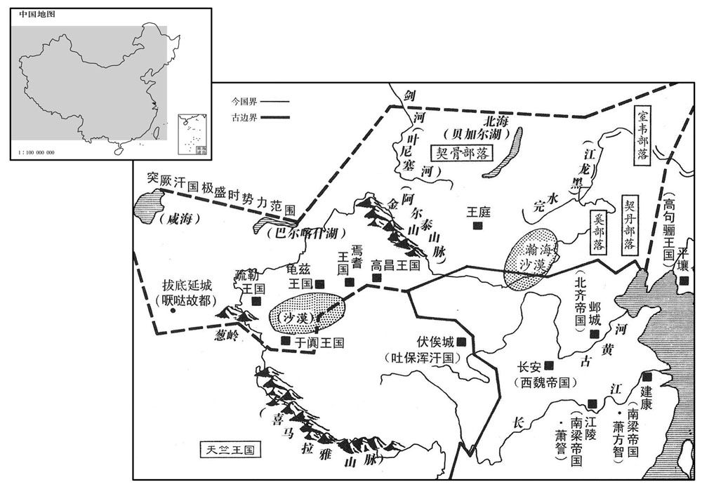
初，魏太师泰以汉、魏官繁，命苏绰及尚书令卢辩依周礼更定六官。〔更，工衡翻。〕
当初，西魏太师宇文泰因为汉朝、魏朝官职繁多，便命令苏绰和尚书令卢辩依照《周礼》重新确定了六官的职称。
译本所载内容待核对（不作白话）
[6]二月，癸丑，晋安王至自寻阳，入居朝堂，即梁王位，时年十三。以太尉王僧辩为中书监、录尚书、骠骑大将军、都督中外诸军事，加陈霸先征西大将军，以南豫州刺史侯为江州刺史，湘州刺史萧循为太尉，广州刺史萧勃为司徒，镇东将军张彪为郢州刺史。
[14]夏，四月，庚申，齐主如晋阳。
[33]镇南将军王琳侵魏，魏大将军豆卢宁御之。[33]镇南将军王琳入侵西魏，西魏大将军豆卢宁带兵抵御他。
[37]魏益州刺史宇文贵使谯淹从子子嗣诱说淹，以为大将军，淹不从，斩子嗣。贵怒，攻之，淹自东遂宁徒屯垫江。
公元556年 · 梁世祖孝元皇帝太平元年
太平元年〔（丙子、五五六）是年九月方改元太平。〕
上传原文的注释括号有异常，字符原样保留；无法可靠划分的段落默认全文显示。
本年事件索引（现代整理）
- 西魏开始设立六官，任宇文泰为大冢宰
- 梁朝大赦天下，陈霸先派江旰劝徐嗣徽归降
- 陈蒨、周文育攻破吴兴，杜龛被斩
- 陈蒨、周文育袭击会稽，张彪败走被杀
- 侯瑱占据豫章、江州，陈霸先命周文育等讨伐
- 徐嗣徽、任约袭击采石，俘获守将张怀钧
- 后梁主萧詧在公安击退侯平
- 梁朝下诏允许古钱、新钱混合使用
- 北齐与任约、徐嗣徽合兵十万入侵梁朝，被陈霸先击退
- 北齐娄叡击败鲁阳蛮
- 侯安都突袭历阳，击败北齐行台司马恭
- 宇文泰立嫡子宇文觉为世子
- 宇文泰北巡
- 北齐召萧渊明议和并骗其退兵，随后进攻建康
- 北齐汉阳王高洽去世
- 北齐军搭桥渡秦淮，周文育击败徐嗣徽部队
- 北齐军抵达倪塘，侯安都等击败徐嗣徽军并袭击瓜步
- 北齐军到达钟山，梁军截断其粮运
- 连日暴雨，北齐军受困泥水中
- 陈霸先等大破北齐军，擒杀徐嗣徽及其弟
- 梁朝大赦天下，解除戒严
- 侯平不再听从王琳指挥，杀吕旬后投奔侯瑱
- 高洋即位之初勤于政务，后来酗酒暴虐并杀死指责他的妇人
- 娄太后斥责高洋酗酒，高洋醒后自责并请求受杖
- 高洋在李后家鞭打母亲崔氏，并以马鞭羞辱杨愔
- 高洋逼迫高氏妇女并杀害拒绝他的尔朱太妃
- 高洋无故杀害都督韩哲，以杀人为醉酒取乐
- 裴谓之上书谏高洋，王纮也因规劝而险遭处死
- 高洋游宴东山，因宇文泰不听命而发怒
- 李集当面将高洋比作桀纣，反复受刑仍不改口
- 高洋虽暴虐，杨愔执政仍使北齐政令清明
- 樊毅袭击武陵并杀死衡阳王萧护，被王琳擒获
- 陈霸先兼任中书监、司徒和扬州刺史
- 侯平攻打侯瑱部将奫，侯瑱败走后投降陈霸先
- 熊昙朗趁侯瑱败走夺取其马匹兵器
- 北齐大赦天下
- 西魏派钳耳康买出使王琳，商议归还梁元帝父子灵柩
- 鄱阳王萧循在江夏去世，吴藏攻江夏未克而死
- 宇文泰北渡黄河
- 西魏封王琳为大将军、长沙郡公
- 陆腾攻破陵州叛獠山城，平定叛乱
- 高洋西巡前醉酒失态，随后前往晋阳
- 梁朝改元太平，任陈霸先为丞相
- 突厥木杆与西魏史宁联军击败吐谷浑
- 王琳水军攻取江夏，丰城侯萧泰投降
- 北齐征发山东寡妇配给军人
- 宇文泰病逝，宇文觉继位并镇守同州
- 于谨力劝群臣拥戴宇文护主持西魏军政
- 丰城侯萧泰逃奔北齐，王琳拒绝入朝任司空
- 高洋下令合并州郡，裁撤三州、一百五十三郡
- 北齐从江州划出四郡设置高州
- 北齐任萧勃为太保
- 西魏安葬宇文泰，封世子宇文觉为周公
- 周续被部将杀死，周迪继而据临川起兵
- 北齐从西河总秦戍修筑长城，东至大海
- 宇文护令恭帝禅位，宇文觉即周天子位
春，正月，丁丑，魏初建六官，以宇文泰为太师、大冢宰，柱国李弼为太傅、大司徒，赵贵为太保、大宗伯，〔宗伯以上，以三公兼六卿之职。北史卢辩传：置太师、太傅、太保各一人，是曰三孤。〕独孤信为大司马，于谨为大司寇，侯莫陈崇为大司空。自余百官，皆仿周礼。
春季，正月，丁丑（初一），西魏开始建立实行文官之制，任命宇文泰为太师、大冢宰，柱国李弼为太傅、大司徒，赵贵为太保、大宗伯，独孤信为大司马，于谨为大司寇，侯莫陈崇为大司空。其余百官的设置任命，都模仿《周礼》。
戊寅，大赦，其与任约、徐嗣徽同谋者，一无所问。癸未，陈霸先使从事中郎江旰说徐嗣徽使南归，〔说，式芮翻；下因说同。〕嗣徽执旰送齐。
戊寅（初二），梁朝大赦天下。凡是与任约、徐嗣徽同谋的人，一概不予追究。癸未（初七），陈霸先派从事中郎江旰去劝说徐嗣徽，让他回南方来。徐嗣徽把江旰抓起来送到了北齐。
陈蒨、周文育合军攻杜龛于吴兴。龛勇而无谋，嗜酒常醉，其将杜泰阴与蒨等通。龛与蒨等战败，泰因说龛使降，〔将，即亮翻。说，输芮翻。降，户江翻。〕龛然之。其妻王氏曰：〔王氏，僧辩女也。〕「霸先雠隙如此，何可求和！」因出私财赏募，复击蒨等，大破之。〔复，扶又翻。〕既而杜泰降于蒨，龛尚醉未觉，〔觉，古效翻，又如字。〕蒨遣人负出，于项王寺前斩之。〔项羽起吴下，故后人为立寺于吴兴。考异曰：梁书：「太平元年，正月癸未，杜龛降，诏赐死。」陈书：「绍泰元年，十二月，杜龛以城降；明年，正月癸未，诛杜龛于吴兴，龛从弟北叟、司马沈敦并赐死」。典略：「魏恭帝二年，十二月，蒨命刘澄等攻龛，大败之，龛乃降；明年，正月丁亥，周铁虎送杜龛祠项王神，使力士拉龛于坐，从弟北叟、司马沈孝敦并赐死。」今从南史。〕王僧智与其弟豫章太守僧愔俱奔齐。〔愔，于今翻。考异曰：梁书、南史王僧辩传：「僧辩既亡，僧智得就任约。约败走，僧智肥不能行，又遇害。僧智弟僧愔位谯州刺史，征萧勃，及闻兄死，引军还。时吴州刺史羊亮隶在僧愔下，与僧愔不平，密召侯瑱见禽。僧愔以名义责瑱，瑱乃委罪于将羊鲲，斩之，僧愔复得奔齐。」陈书、南史侯瑱传则云：「僧辩使其弟僧愔与瑱共讨萧勃，及陈武帝诛僧辩，僧愔阴欲图瑱及夺其军，瑱知之，尽收僧愔徒党，僧愔奔齐。」典略：「魏恭帝三年，正月初，僧愔与瑱共讨曲江侯勃，至是，吴州刺史羊亮说僧愔袭瑱，而翻以告瑱，瑱攻之，僧愔奔齐。」凡此诸说，莫知孰是。今约其梗概言之。
本段缺少可靠对应白话，原文完整保留；未使用生成译文。
东扬州刺史张彪素为王僧辩所厚，不附霸先，二月，庚戌，陈蒨、周文育轻兵袭会稽，彪兵败，走入若邪山中，〔简文帝大宝元年，张彪起兵于若邪山。邪，音耶。〕蒨遣其将吴兴章昭达追斩之。〔将，即亮翻；下同。〕东阳太守留异馈蒨粮食，霸先以异为缙州刺史。〔因缙云山而置缙州。五代志：处州栝苍县有缙云山。缙，音晋。〕
东扬州刺史张彪一向被王僧辩所宠爱看重，所以不肯归附陈霸先。二月，庚戌（初五），陈、周文育派轻装士兵奔袭会稽，张彪兵败，逃入若邪山中。陈派他的部将吴兴人章昭达追上并斩了他。东阳太守留异送粮食给陈，陈霸先任命留异为缙州刺史。
江州刺史侯瑱本事王僧辩，亦拥兵据豫章及江州，不附霸先。霸先以周文育为南豫州刺史，使将兵击湓城，庚申，又遣侯安都、周铁虎将舟师立栅于梁山，以备江州。
江州刺史侯原来侍奉王僧辩，所以也拥兵占据豫章和江州，不归附陈霸先。陈霸先任命周文育为南豫州刺史，派他带兵去打湓城。庚申（十五日），又派侯安都、周铁虎率领水军在梁山一带建立营栅，以防备江州。
癸亥，徐嗣徽、任约袭采石，执戍主明州刺史张怀钧送于齐。〔五代志：日南郡交谷县，梁置明州。张怀钧盖带刺史而戍采石也。〕
癸亥（十八日），徐嗣徽、任约袭击采石，抓获采石守将明州刺史张怀钧，送他到了北齐。
后梁主击侯平于公安，平与长沙王韶引兵还长沙。王琳遣平镇巴州。
后梁国主萧在公安袭击侯平，侯平和长沙王萧韶带兵回长沙。王琳派侯平去镇守巴州。
三月，壬午，诏杂用古今钱。
三月，壬午（初七），梁朝下诏，允许古今钱币混合使用。
戊戌，齐遣仪同三司萧轨、库狄伏连、尧难宗、东方老等与任约、徐嗣徽合兵十万入寇，出栅口，〔栅口，栅江口也，在今和州历阳县西南百五十里，与无为军分界，即古之濡须口。宋白曰：庐州东南至栅口，今谓之新妇口，三百八十四里，对县即旧南陵县地，对岸为繁昌县。〕向梁山。陈霸先帐内荡主黄丛逆击，破之，〔荡主，主勇士以突荡敌人。〕齐师退保芜湖。霸先遣定州刺史沈泰等就侯安都，共据梁山以御之。周文育攻湓城，未克，召之还。夏，四月，丁巳，霸先如梁山巡抚诸军。
戊戌（二十三日），北齐派仪同三司萧轨、库狄伏连、尧难宗、东方老等人与任约、徐嗣徽联合成大军十万人南下进犯，军队从栅口出发，直指梁山。陈霸先军帐内的一位善于突击冲锋的主将黄丛率兵迎击，打败了北齐军队，北齐军队只好退保芜湖。陈霸先派定州刺史沈泰等人归侯安都指挥，据守梁山以抵抗北齐军队。周文育带兵攻打湓城，没有攻克，被召回来。夏季，四月，丁巳（十三日），陈霸先到梁山去巡视安抚各路兵马。
乙丑，齐仪同三司娄叡讨鲁阳蛮，破之。
两版字句有差异，建议核对原文。
乙丑（二十一日），北齐仪同三司娄讨伐鲁阳蛮，打败了他们。
侯安都轻兵袭齐行台司马于历阳，〔考异曰：梁书云：「壬午，安都袭恭。」按长历，是月乙巳朔，无壬午。〕大破之，俘获万计。
侯安都率领轻装士兵在历阳袭击北齐行台司马恭，把司马恭打得大败，俘虏了上万人。
魏太师泰尚孝武妹冯翊公主，生略阳公觉；姚夫人生宁都公毓。毓于诸子最长，〔五代志：西城郡安康县，旧曰宁都。毓，余六翻。长，知两翻；下同。〕娶大司马独孤信女。泰将立嗣，谓公卿曰：「孤欲立子以嫡，恐大司马有疑，如何﹖」众默然，未有言者。尚书左仆射李远曰：「夫立子以嫡不以长，〔春秋公羊传之言。〕略阳公为世子，公何所疑！若以信为嫌，请先斩之。」遂拔刀而起。泰亦起，曰：「何至于是！」信又自陈解，远乃止。于是群公并从远议。远出外，拜谢信曰：「临大事不得不尔！」信亦谢远曰：「今日赖公决此大议。」遂立觉为世子。
西魏太师宇文泰娶了孝武帝的妹妹冯翊公主，生下儿子略阳公宇文觉，姚夫人则生了宁都公宇文毓。宁都公宇文毓在几个儿子中最年长，娶了大司马独孤信的女儿。宇文泰准备确立继承人，对公卿大臣说：“我想立嫡出的儿子为世子，担心大司马对此有疑心，该怎么办好呢？”众大臣默然不作声。尚书左仆射李远说：“从来立世子都是看是否嫡出，不看是否年长，把略阳公宇文觉立为世子，您有什么可疑虑的呢？如果怕独孤信有意见，为此有顾虑，那么可以先把他斩了！”于是就拔出刀要行动。宇文泰忙站起来阻止说：“何至于要这样做！”独孤信也赶快自我陈述辩解，表示并无异议，李远这才停止行动。于是大臣们都听从了李远的建议。退朝后，李远走出宫廷外，拜谢独孤信说：“面临国家大事不得不这样，请谅解。”独孤信也感谢李远说：“今天崐亏得您才把这件大事决定下来。”于是就立略阳公宇文觉为世子。
太师泰北巡
西魏太师宇文泰到北边巡视。
五月，齐人召建安公渊明，诈许退师，〔考异曰：典略云：「五月，齐主在东山饮酒，投杯赫怒，召魏收于前，立为制书，欲自将西讨长安，令上党王涣将兵伐梁，于是涣南侵。」按梁、陈、北齐帝纪及涣传皆无是事，今去之。〕陈霸先具舟送之。癸未，渊明疽发背卒。甲申，齐兵发芜湖，庚寅，入丹杨县，〔此丹杨县乃汉古县，非今镇江府之丹杨县也。据沈约志，晋武帝太康三年，分丹杨县立于湖县。于湖，今太平州也。丹杨县地当在太平州东北。〕丙申，至秣棱故治。〔沈约曰：秣陵本治去京邑六十里，今故治村是也。晋安帝义熙九年移治京邑，在鬬场。鬬场，犹今言教场。晋成帝咸和中，诏内外诸军戏于南郊之场，因名戏场，因名戏场，亦曰鬬场。〕陈霸先遣周文育屯方山，〔丹杨，秦始皇凿方山，其断处为渎，则今淮水。〕徐度顿马牧，〔马牧，牧马之地。〕杜棱顿大航南以御之。
五月，北齐人召见建安公萧渊明，假装要答应退兵。陈霸先准备船只要送萧渊明去。癸未（初九），萧渊明背上痈疽发作死去。甲申（初十），北齐军队从芜湖出发，庚寅（十六日），进入丹杨县，丙申（二十二日），到达秣棱旧治所。陈霸先派周文育屯驻于方山，徐度驻守马牧，杜棱驻守大航南端，以防御北齐兵。
齐汉阳敬怀王洽卒。〔洽，齐主之弟。〕
北齐汉阳敬怀王高洽去世。
辛丑，齐人跨淮立桥栅渡兵，夜至方山，徐嗣徽等列舰于青墩，至于七矶，以断周文育归路。〔舰，户黯翻；下同。墩，音敦。断，音短。〕文育鼓噪而发，嗣徽等不能制；至旦，反攻嗣徽。嗣徽骁将鲍砰独以小舰殿军，〔骁，坚尧翻。将，即亮翻；下同。砰，普耕翻。殿，丁练翻。〕文育乘单舴艋与战，〔舴，陟格翻。艋艋，小船。一舟曰单。〕跳入舰中，〔跳，他吊翻。〕斩砰，仍牵其舰而还。〔还，从宣翻，又如字。〕嗣徽众大骇，因留船芜湖，自丹杨步上。〔上，时掌翻；下槊上同。〕陈霸先追侯安都、徐度皆还。〔追梁山之军还建康，以御齐师。〕
辛丑（二十七日），北齐军队跨秦淮河修筑桥梁渡兵，夜里到达方山，徐嗣徽等人把军舰摆在青墩一带，一直摆到七矶，用以切断周文育的退路。周文育指挥士兵大声豉噪，大举进军，徐嗣徽等人没能抵挡得住。到天亮时分，周文育反攻徐嗣徽。徐嗣徽手下的骁勇的将领鲍坪单独用小舰当后卫，周文育乘坐一条小快船与他近战，纵身跳入小舰中，一刀斩了鲍坪；还把这条小舰拉了回来。徐嗣徽的部众一看吓得要命，于是把船留在芜湖，从丹杨步行上岸。陈霸先把侯安都、徐度追回来以抗击北齐军队。
癸卯，齐兵自方山进及倪塘，〔倪塘在台城东。〕游骑至台，〔骑，奇寄翻。〕建康震骇，帝总禁兵出顿长乐槷，〔乐，音洛。〕内外纂严。霸先拒嗣徽等于白城，〔白城当在湖熟县界。〕适与周文育会。将战，风急，霸先曰：「兵不逆风。」文育曰：「事急矣，何用古法！」抽槊上马先进，〔【章：十二行本「进」下有「众军从之」四字；乙十一行本同；孔本同；张校同；退斋校同。】〕〔槊，色角翻。〕风亦寻转，杀伤数百人。侯安都与嗣徽等戢于耕坛南，〔天子亲耕藉田，祭先农于田所，故有耕坛。宋文帝元嘉二十一年，令司空、司农、京尹、令、尉度宫之辰地，八里之外，整制千亩，中开阡陌，立先农坛于中阡西陌南，设御耕坛于中阡东陌北。〕安都帅十二骑突其陈，破之，〔骑，奇寄翻。陈，读曰阵。〕生擒齐仪同三司乞伏无劳。〔考异曰：南史作「乞伏无芳」。今从陈书。〕霸先潜撤精卒三千配沈泰渡江，袭齐行台赵彦深于瓜步，获舰百余艘，粟万斛。〔艘，苏遭翻。〕
癸卯（二十九日），北齐军队从方山挺进到倪塘，游动的前哨骑兵在宫城下出现，建康城受到震惊，人心惶惶，梁敬帝带着宫廷卫队出宫驻入长乐寺，内外戒严。陈霸先在白城抗御徐嗣徽等人，正好与周文育的军队会合。将要与北齐兵交战时，风刮得很急，陈霸先说：“军队最好不要逆风而进。”周文育说：“军情紧急，何必拘泥于古法！”说着便抽出一把槊跃身上马冲向前去。过一会风向也转了，周文育猛冲，杀伤了好几百人。侯安都与徐嗣徽在耕坛南边会战。侯安都率领十二个骑兵冲破徐嗣徽的阵地，把他们打败，活捉了北齐仪同三司乞伏无劳。陈霸先秘密地撤下三千精锐士兵配合沈泰渡过长江，在瓜步袭击北齐行台赵彦深，缴获战船一百余艘，粮食一万斛。
六月，甲辰，齐兵潜至钟山，侯安都与齐将王敬宝战于龙尾，〔钟山之龙尾也。自山趾筑道陂陀以登山，曰龙尾。〕军主张纂战死。丁未，齐师至幕府山，〔幕府山在今建康城西二十五里，晋琅邪王初渡江，丞相王导建幕府其上，因名。〕霸先遣别将钱明将水军出江乘，邀击齐人粮运，尽获其船米。齐军乏食，杀马驴食之。庚戌，齐军踰钟山，霸先与众军分顿乐游苑东及覆舟山北，断其冲要。〔断，音短。〕壬子，齐军至玄武湖西北，将据北郊坛，〔晋成帝立北郊坛于覆舟山南。〕众军自覆舟东移顿坛北，与齐人相对。
六月，甲辰（初一），北齐军队偷偷来到钟山，侯安都与北齐将领王敬宝在龙尾交战，军中首领张纂在战斗中阵亡。丁未（初四），北齐军队抵达幕府山，陈霸先派别将钱明率领水军兵发江乘，截击北齐军队的粮食运输船队，把他们的船队装运的大米全部缴获。这一来，北齐军队没有粮食吃，只好杀战马、驴子充饥。庚戌（初七），北齐军队翻越钟山，陈霸先与众军分头驻扎在乐游苑东边和覆舟山北边，切断北齐军队的交通要道。壬子（初九），北齐军队到达玄武湖西北，准备占据北边的郊祀高坛。众军从覆舟向东移动，驻扎在坛北，与北齐军队相对摆开阵势。
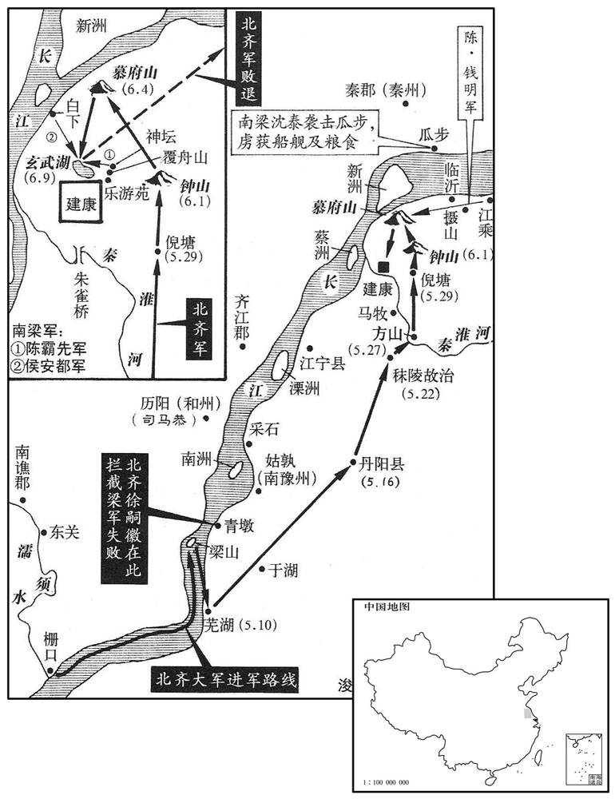
会连日大雨，平地水丈余，齐军昼夜坐立泥中，足指皆烂，悬鬲以爨，〔鬲，音历。尔雅：鼎款足者谓之鬲。说文：鬲，鼎属也；实五觳。斗二升曰觳。〕而台中及潮沟北路燥，〔潮沟，吴孙权所开，以引潮抵于秦淮。〕梁军每得番易。时四方壅隔，粮运不至，建康户口流散，征求无所。甲寅，少霁，〔少，诗沼翻。〕霸先将战，调市人得麦饭，〔调，徒吊翻。〕分给军士，士皆饥疲。会陈蒨馈米三千斛、鸭千头，霸先命炊米煮鸭，人人以荷叶裹饭，鹀以鸭肉数脔，〔鹀，公浑翻。以鸭肉盖饭上曰鹀。今江东人犹谓以物蒙头曰鹀。脔，力兖翻。〕乙卯，未明，蓐食，比晓，〔比，必利翻。〕霸先帅麾下出莫府山。侯安都谓其部将萧摩诃曰：「卿骁勇有名，千闻不如一见。」〔帅，读曰率。将，即亮翻。骁，坚尧翻。〕摩诃对曰。「今日令公见之。」及战，安都坠马，齐人围之，摩诃单骑大呼，直冲齐军，齐军披靡，安都乃免。〔骑，奇寄翻。呼，火故翻。披，普彼翻。〕霸先与吴明彻、沈泰等众军首尾齐举，纵兵大战，安都自白下引兵横出其后，齐师大溃，斩获数千人，相蹂践而死者不可胜计，〔蹂，人九翻。践，慈演翻。胜，音升。〕生擒徐嗣徽及弟嗣宗，斩之以徇，追奔至于临沂。〔晋成帝咸康元年，桓温领南琅邪太守，镇江乘蒲州之金城，求割丹杨之江乘县境立郡，又分江乘地立临沂县。宋白曰：临沂山西北临大江。〕其江乘、摄山、钟山等诸军相次克捷，〔摄山，在今建康城北四十五里。江乘地记曰：有草可以摄生，故名。〕虏萧轨、东方老、王敬宝等将帅凡四十六人。〔将，即亮翻。帅，所类翻。〕其军士得窜至江者，缚荻筏以济，〔荻，亭历翻，萑也。〕中江而溺，流尸至京口，翳水弥岸；唯任约、王僧愔得免。丁巳，众军出南州，烧齐舟舰。
当时正赶上连日下大雨，平地雨水积有一丈多深，北齐将士白天黑夜或坐或立全都泡在泥水中，脚指头都烂了，做饭得把锅悬挂起来才行，但是皇城和潮沟的北路一带却还干燥，梁朝军队总是能换班作战。当时四方通往都城的道路都堵塞隔断了，粮食也运不进来，建康一带人民东流西散，无法征收粮赋。甲寅（十一日），天才稍稍放晴，陈霸先准备开战，向商人征调了一些麦子，做成麦饭分给军中士兵，士兵们都已经又饿又疲劳了。正好这时陈送来大米三千斛，鸭子一千只。陈霸先下令蒸米饭煮鸭子，士兵们个个用荷叶包米饭，饭上盖上几片鸭肉，乙卯（十二日），天还没亮，士兵们都坐在草席上用饭，等到天一亮，陈霸先就率领下属将士兵发幕府山出发。侯安都对他的部将萧摩诃说：“你一向英勇善战，远近闻名，这回可是千闻不如一见，就看你的了。”萧摩诃回答说：“今天就让您看看！”等到交战时，侯安都不慎从马上摔下来了，北齐将士围了上来，萧摩诃单枪匹马，大呼猛进，直向北齐军士冲来，北齐士兵纷纷避开，侯安都这才保住了生命。陈霸先与吴明彻、沈泰等众军头尾一齐冲锋，指挥将士全面出击，猛打猛冲，侯安都又从白下带领一支军队切断了北齐军的后路，北齐军队大败，被杀被俘的有几千人，互相蹂踏而死的人不可胜计，徐嗣徽和他弟弟徐嗣宗被活捉后杀头示众。梁军追杀败逃的北齐兵，一直追到临沂。梁朝在江乘、摄山、钟山等地的军队也相继获胜，俘虏了北齐萧轨、东方老、王敬宝等将帅共四十六人。北齐士兵有逃窜到长江边的，用芦苇扎成筏子想渡江，但到江中心苇筏就被水冲散，士兵也纷纷落入水中，尸体随江水流到京口一带，浮尸复盖了水面，堆满了江岸。只有任约、王僧两个人生还。丁巳（十四日），梁朝众军从南州出发，烧掉了北齐的战船。
戊午，大赦。己未，解严。军士以赏俘贸酒，一人裁得一醉。〔贸，音茂。〕庚申，斩齐将萧轨等，齐人闻之，亦杀陈昙朗。霸先启解南徐州以授侯安都。〔赏其功也。〕
戊午（十五日），梁朝大赦天下。己未（十六日），解除戒严。军士们用赏赐所得的战俘去换酒喝，一名战俘只能买得够一次大醉的酒。庚申（十七日），把被俘的北齐将领萧轨等人全杀了，北齐方面闻讯，也杀了陈昙朗作为报复。陈霸先奏请解除南徐州刺史让给侯安都。
侯平频破后梁军，以王琳兵威不接，更灴受指麾；琳遣将讨之。平杀巴州助防吕旬，收其众，奔江州，侯瑱与之结为兄弟。琳军势益衰，乙丑，遣使奉表诣齐，并献驯象。〔安南出象处曰象山，岁一捕之，缚栏道旁，中为大㗳，以雌象前行为媒，遗甘蔗于地，傅药蔗上。雄象来食蔗，渐引入栏，闭其中，就㗳中教习驯扰之，始甚咆哮，㗳深不可出，牧者以言语谕之，久则渐解人意。使，疏吏翻。驯，松伦翻。〕江陵之陷也，琳妻蔡氏、世子毅皆没于魏，琳又献款于魏以求妻子；亦称臣于梁。
侯平多次打败后梁的军队，自以为有功，又认为王琳的兵威已经难以为继了，所以更加不受指挥了。于是王琳派将领去讨伐他。侯平杀了巴州协助防守的将领吕旬，把吕旬的部众收归自己指挥，投奔到了江州，侯和他结成了兄弟。王琳的军队势力越来越显得衰落，乙丑（二十一日），派使节带着表示归顺的表章去到北齐，并献上驯服了的大象。当初江陵陷落于西魏时，王琳的妻子蔡氏、世子王毅都落入西魏人手中，所以王琳又讨好西魏以求得妻子、儿子的释放。同时也向梁朝称臣。
齐发丁匠三十余万修广三台宫殿。〔三台在邺城，曹操所筑。〕
北齐动用民工匠人三十多万扩修三台宫殿。
齐显祖之初立也，留心政术，务存简靖，坦于任使，〔谓任使之际，坦怀待人。〕人得尽力。又能以法驭下，或有违犯，不容勋戚，内外莫不肃然。至于军国机策，独决怀抱；每临行陈，〔行，户刚翻。陈，读曰阵。〕亲当矢石，所向有功。数年之后，渐以功业自矜，遂嗜酒淫泆，〔泆，弋乙翻，淫放也。〕肆行狂暴；或身自歌舞，尽日通宵；或散发胡服，杂衣锦彩；〔衣，于既翻。〕或袒露形体，涂傅粉黛；或乘驴、牛、橐驼、白象，不能鞍勒；或令崔季舒、刘桃枝负之而行，担胡鼓拍之；〔胡鼓，以手拍之成声。刘昫曰：腰鼓大者瓦，小者木，皆广首而纤腹，本胡鼓也。担，都甘翻。〕勋戚之弟，朝夕临幸，游行市里，街坐巷宿；或盛夏日中暴身；〔暴，读曰暴。〕或隆冬去衣驰走；从者不堪，〔去，羌吕翻。从，才用翻。〕帝居之自若。三台构木高二十七丈，〔高，居报翻。〕两栋相距二百余尺，工匠危怯，皆系绳自防，帝登脊疾走，殊无怖畏；〔脊，栋脊也。怖，普布翻。〕时复雅飱，〔复，扶又翻。飱，与舞同。〕折旋中节，〔中，竹仲翻。〕傍人见者莫不寒心。尝于道上问妇人曰：「天子何如﹖」曰：「颠颠痴痴，何成天子！」帝杀之。
北齐在文宣帝高洋刚刚立国的时候，很注意研究为政之术，一切政务，力求简便稳定，有所任命，也是坦诚待人，臣子们也得以尽其所能为国服务。又能用法律为准绳来驾驭部下，如果有谁犯了法，即使无勋贵戚也绝不宽容，所以朝廷内外秩序井然。至于军事机要、国家大政方针，则由文宣帝自己拿出决断。文宣帝每次亲临战阵，总是亲自冒着箭石纷飞的危险，所到之处都立功绩。几年以后，文宣帝渐渐以为建立了大功业，就骄傲自满起来，于是就贪杯纵酒，淫逸无度，滥行狂暴之事。有时自己亲自参与歌舞，又唱又跳，通宵达旦，从早到晚，没日没夜。有时披散头发，穿上胡服，披红挂绿，有时却又裸露着身体，涂脂抹粉；有时骑着驴、牛、骆驼、白象，连鞍子和勒绳也不用；有时让崔季舒、刘桃枝背着他走，自己挎着胡鼓用手拍得彭彭响；元勋和贵戚之家，他常常不分朝夕驾临，在集市上穿游而行，坐街头睡小巷都是常事；有时大夏天在太阳下晒身子；有时大冬天脱去衣服猛跑步；跟从他的人受不了这么折腾，文宣帝却全不当一回事。三台的梁柱高达二十七尺，两柱之间相距二百多尺，工匠上去都感到危险畏惧，在身上系绳子防止出意外。但文宣帝爬上三台的梁脊快步小跑，竟然一点也不害怕。跑着跑着还不时来点雅致的舞蹈动作，又折身子又打旋，居然符合节奏，旁边看的人吓得汗毛直竖，没有不寒心的。有一次，文宣帝在路上问一个妇女说：“咱们的天子怎么样呢？”这妇女不知他就是天子，说：“他成天疯疯颠颠，呆呆痴痴，哪有什么天子样！”文宣帝把她杀了。
娄太后以帝酒狂，举杖击之曰：「如此父生如此儿！」帝曰：「即当嫁此老母与胡。」太后大怒，遂不言笑。帝欲太后笑，自匍匐，〔匍，音蒲。匐，莫北翻。〕以身举床，坠太于地，颇有所伤。既醒，大惭恨，使积柴炽火，欲入其中。太后惊惧，亲自持挽，强为之笑，曰：「向汝醉耳！」〔强，其两翻。为，于伪翻。〕帝乃设地席，命平秦王归彦执杖，口自责数，〔自责而数罪也。数，所具翻。〕脱背就罚，谓归彦曰：「杖不出血，当斩汝。」太后前自抱之，帝流涕苦请，乃笞脚五十，然后衣冠拜谢，悲不自胜。〔胜，音升。〕因是戒酒，一旬，又复如初。
娄太后有一次因为文宣帝发酒疯，举起拐杖打他，说：“这样英雄的父亲竟生出这样混帐的儿子！”文宣帝竟然说：“看来得把这老太太嫁给胡人了。”娄太后勃然大怒，从此再也不说话，脸上也没有了笑容。文宣帝想让娄太后笑，自己爬到了床底下去，用身子把床抬起来，把坐在床上的太后摔了下来，使太后受了伤。酒醒之后，高洋大感羞惭悔恨，让人堆起柴堆点燃，自己想跳进去烧死。娄太后大吃一惊，害怕极了，赶忙亲自过来又抱又拉，勉强笑着说：“刚才是你喝醉了，我不当真。”文宣帝于是让人铺上地席，命令平秦王高归彦亲自执刑杖，自己口里列数着自己的罪过，脱开衣服露出背部接受杖刑。文宣帝对高归彦说：“你用力打，打不出血来，我就杀了你。”娄太后上前自己抱着他不让打，文宣帝痛哭流涕，最后还是在脚上打了五十下，然后穿上衣服，戴上帽子向娄太后拜谢宽恕之恩，一付悲不自胜的样子。因为这一番酒后失言伤害太后的事，文宣帝下决心戒酒。但刚十天，又嗜酒如命，和原来一样。
帝幸李后家，以鸣镝射母后崔氏，〔射，而亦翻。〕骂曰：「吾醉时尚不识太后，老婢何事！」马鞭乱击一百有余。虽以杨愔为相，使进厕筹，以马鞭鞭其背，流血浃袍。尝欲以小刀剺其腹，〔愔，于今翻。相，息亮翻。浃，即协翻。剺，力之翻，划也。〕崔季舒托俳言曰：「老小公子恶戏。」〔托为俳谐之言。〕因掣刀去之。〔掣，昌列翻。去，羌吕翻。〕又置愔于棺中，载以车。〔，音而，丧车也。〕又尝持槊走马，〔槊，色角翻。〕以拟左丞相斛律金之胸者三，金立不动，乃赐帛千段。
文宣帝去李后的家，用带响声的箭射李后的母亲崔氏，边射边大骂，说：“我醉酒的时候连太后都不认识，你这老奴才算个什么！”还挥动马鞭，一口气打了一百多下。文宣帝虽然任命杨为丞相，但常轻侮他，让他在自己大便时往厕所递送拭秽的篾片。又用马鞭打他背部，血流下来都湿透了衣袍。又曾想用小刀子在他小腹上划痕，崔季舒一看不是事，就假托说笑话：“ 这是老公子和小公子恶作剧呢！”乘势把文宣帝手里的刀子拔出来拿开了。又有一次，文宣帝把杨放在棺材中，用丧车运着，演习大出殡。还有一次，曾手持一把槊在马上奔驰，三次用槊作向左丞相斛律金胸口刺去的动作，斛律金站着不动崐，文宣帝夸他勇敢，赏赐他一千段帛。
高氏妇女，不问亲疏，多与之乱，或以赐左右，又多方苦辱之。彭城王浟太妃尔朱氏，魏敬宗之后也，〔浟，夷周翻。〕帝欲蒸之，不从；手刃杀之。故魏乐安王元昂，李后之姊伲也，其妻有色，帝数幸之，〔数，所角翻。〕欲纳为昭仪。召昂，令伏，以鸣镝射之百余下，〔射，而亦翻。〕凝血垂将一石，竟至于死。后啼不食，乞让位于姊，太后又以为言，帝乃止。
高氏家族中的妇女，也不管亲疏远近，文宣帝都胡乱和她们发生性关系，还把其中的一些赐给身边亲信，但又想尽方法折腾侮辱人家。彭城王高的太妃尔朱氏，是魏敬宗的皇后，文宣帝想奸淫她，她不服从，便亲手用刀杀死。过去的东魏乐安王元昂，是李后的姐夫，他妻子长得漂亮，文宣帝多次占有她，想把她纳入宫中当昭仪。文宣帝把元昂召来，命令他趴下，用响箭射了他一百多箭，凝结的血块几乎有一石之多，就这样活活被射死了。李后为此啼哭终日不进食，要求把皇后位置让给姐姐，娄太后又在旁说了话，文宣帝才没有这样做。
又尝于众中召都督韩哲，无罪，斩之。作大镬、长锯、剉、碓之属，陈之于庭，〔镬，户郭翻。鼎大无足曰镬。〕每醉，辄手杀人，以为戏乐。〔乐，音洛。〕所杀者多令支解，或焚之于火，或投之于水。杨愔乃简邺下死囚，置之仗内，〔殿庭左右立仗。〕谓之供御囚，帝欲杀人，辄执以应命，三月不杀，则宥之。
北齐文宣帝还曾经在大庭广众之中召见都督韩哲，也没什么罪就把他斩首。还派人制造大铁锅、长锯子、大铡刀、大石碓之类刑具，摆在宫庭里，每次喝醉了酒，就动手杀人，以此当作游戏取乐。被他杀掉的人大多下令肢解，有的扔到火里去烧，有的扔到水里去。杨只好选了一些邺城的死罪囚犯，作为仪仗人员，叫做“供御囚”，文宣帝一想杀人，就抓出来应命，如果三个月没被杀掉，就得到宽大处理。
开府参军裴谓之上书极谏，帝谓杨愔曰：「此愚人，何敢如是！」对曰：「彼欲陛下杀之，以成名于后世耳。」帝曰：「小人，我且不杀，尔焉得名！」〔焉，音烟。〕帝与左右饮酒，曰：「乐哉！」都督王纮曰：「有大乐，亦有大苦。」〔乐，音洛。〕帝曰：「何谓也﹖」对曰：「长夜之饮，不寤国亡身陨，所谓大苦！」帝缚纮，欲斩之，思其有救世宗之功，乃舍之。〔高澄之死，王纮冒刃御贼，见一百六十二卷武帝太清二年。〕
开府参军裴谓之上书极力谏阻文宣帝随意杀人的狂暴行为，文宣帝对杨说：“这是个蠢人，他怎么敢这样做！”杨回答说：“他大概是想让陛下您杀了他，这样他好在后世成名吧！”文宣帝说：“小人！我权且不杀，看你怎么出名！”文宣帝和身边亲信饮酒作乐，得意忘形地说：“真快乐呀！”都督王在旁说：“有大快乐，也会有大痛苦。”文宣帝问道：“这话怎么说？”王回答说：“老是作长夜之饮，酩酊大醉，没等醒过来已经国亡身死，这就是我所说的大痛苦！”文宣帝一听生了气，命人把王捆起来，要把他处斩，但想起他过去有救文襄帝生命的功劳，于是又放了他。
帝游宴东山，以关、陇未平，投杯震怒，召魏收于前，立为昭书，宣示远近，将事西行；魏人震恐，常为度陇之计，〔宇文泰识虚实，何得因西行一诏，便为度陇之计！此齐史官之华言耳。〕然实未行。一日，泣谓群臣曰：「黑獭不受我命，柰何﹖」都督刘桃枝曰：「臣得三千骑，〔骑，奇寄翻。〕请就长安擒之以来。」帝壮之，赐帛千匹。赵道德进曰：「东西两国，强弱力均，彼可擒之以来，此亦可擒之以往。桃枝妄言应诛，陛下柰何滥赏！」帝曰：「道德言是。」回绢赐之。帝乘马欲下峻岸，入于漳，〔欲入漳水。〕道德揽辔回之；帝怒，将斩之。道德曰：「臣死不恨，当于地下启先帝，论此儿酣酗颠狂，不可教训。」〔酗，吁句翻。陆德明曰：以酒为凶曰酗。〕帝默然而止。他日，帝谓道德曰：「我饮酒过，〔过，谓过多。〕须痛杖我。」道德扶之，〔扶，升栗翻，击也。〕帝走。道德逐之曰：「何物人，为此举止！」
文宣帝去东山游玩欢宴，因为想起关、陇一带尚未平定，便把杯子往地上一摔，大发雷霆，马上把魏收叫到跟前，让他站着写下诏书，向远近四方宣告自己将要向西方采取军事行动。西魏人闻讯感到震动惊恐，于是经常也在筹划防止齐军越过陇地的办法。但实际上文宣帝这一计划并没有实行。有一天，文宣帝流着泪对群臣说：“黑獭不接受我的命令，怎么办呢？”都督刘桃枝回答说：“给我三千骑兵，我就到长安去把他擒拿归来。”文宣帝听了，便称赞他的勇气，赐给他一千匹帛。赵道德走上前说：“魏和齐是西方和东方并立的两个邻国，国势国力强弱是相均等的。你可以把那边的人擒拿归来，对方也可以把你这边的人擒拿过去。刘桃枝口吐狂言，虚妄欺君，应该处死，陛下怎么向崐他滥施奖赏？”文宣帝听了，说：“道德说得对。”收回给刘桃枝的绢帛赐给刘道德。有一次，文宣帝骑着马欲从很高的陡岸跳到漳河里去，赵道德用力拉着马缰绳把他拽回来。文宣帝勃然大怒，要把赵道德处斩。赵道德说：“我为此而死心中没有什么怨恨，到了地下，我要向先帝启奏，把他这个儿子拼命酗酒，疯颠狂乱，不可教训的种种行为告诉他。”文宣帝听了沉默良久，就不杀赵道德了。这以后有一天，文宣帝对赵道德说：“我喝酒喝得过份了，必须狠狠打我一顿。”赵道德真的动手打他，文宣帝跑开了。赵道德追着文宣帝，边追边喊：“你是个什么人，竟做出这种不成体统的举动！”
典御丞李集面谏，〔五代志曰。后齐制官，多循后魏之旧。尚食、尚药二局，皆有典御及丞。尚食总知御膳事，尚药总知御药事，属门下省。〕比帝于桀、纣。帝令缚置流中，〔流水中也。〕沉没久之，〔沈，持林翻。〕复令引出，〔复，扶又翻。〕谓曰：「吾何如桀、纣﹖」集曰：「向来弥不及矣！」帝又令沈之，引出，更问，如此数四，集对如初。帝大笑曰：「天下有如此痴人，方知龙逄、比干未是俊物！」〔龙逄，谏夏桀而死，比干谏殷纣而死。逄，皮江翻。〕遂释之。顷之，又被引入见，〔被，皮义翻。见，贤遍翻。〕似有所谏，帝令将出要斩。〔要，读曰腰。〕其或斩或赦，莫能测焉。
典御史李集当面进谏，甚至把文宣帝比拟为夏桀、商纣。文宣帝下令把他捆起来放到流水中去，让他没入水里很久，再下令把他拽出水面，问他说：“你说，我比夏桀、商纣怎样？”李集回答说：“看来你还比不上他们呢！”文宣帝又下令把他没入水里，拽出来又问，这样折腾了多次，李集的回答一点也没变。文宣帝哈哈大笑说：“天下竟然有这样呆痴的家伙，我这才知道龙逄、比干还不算出色人物呢！”于是释放了他。过了一会儿，李集又被拉着进来见文宣帝，他似乎又想有所进谏，文宣帝下令带出去腰斩。文宣帝喜怒无常，想要杀人还是想要赦免，没有人能猜想得到。
内外憯憯，〔憯，七感翻。憯憯，痛毒之意。〕各怀怨毒；而素能默识强记，加以严断，〔断，丁乱翻。〕群下战栗，不敢为非。又能委政杨愔，愔总摄机衡，百度修敕，〔敕，理也。〕故时人皆言主昏于上，政清于下。愔风表鉴裁，为朝野所重，少历屯阨，〔尔朱屠害杨氏，唯愔得脱，潜窜累载，后归高欢，又以谗间逃隐海岛，欢访而用之。裁，才代翻。少，诗照翻。屯，陟轮翻。〕及得志，有一餐之惠者必重报之，虽先尝欲杀己者亦不问；典选二十余年，以奖拔贤才为己任。性复强记，一见皆不忘其姓名，选人鲁漫汉自言猥贱独不见识，〔选，须绢翻。复，扶又翻。猥，鄙也。〕愔曰：「卿前在元子思坊，〔元子思坊，邺城�之{名。魏侍中元子思居此，后谋西奔，被诛，时人因以名坊。〕乘短尾牝驴，见我不下，以方曲障面，我何为不识卿！」漫汉惊服。
在文宣帝这种淫威下，宫廷内外，大家都敢怒不敢言，心怀怨恨。但文宣帝对事物一向能够暗暗熟识，牢牢记忆，然后加以严格的裁决判断，所以群臣在他面前惶恐战栗，不敢为非作歹。文宣帝又能把政事委托给杨，杨善于统一掌握国家枢机的运行，使各个方面的政事都得到修整，所以当时的人都说文宣帝在上头昏头昏脑，但下面的政事却还算清明有序的。杨颇有风度，仪表整饬，善于鉴识裁断，被朝野各方面人士所看重。他年轻时多次经历困顿灾厄，到了发迹得志之后，凡是他处逆境时对他有施予一餐恩惠的，他也都重重地回报人家。至于早先想杀他的人，他却不再计较。他掌管国家选拔人才的大权达二十多年之久，一向以奖励、提拔人才为己任 。他记性特别好，只要和他见了一面的人，他就记住了人家的姓名，再也不会忘记。有一个候选的人叫鲁漫汉，自己说因为身份低贱，杨不曾认识他。杨提醒他说：“你从前在元子思坊任职，骑着一只短尾巴母驴，在路上遇到我也不下来，用一块黄帕遮住面，假装没看见就走过去，我怎么不认识你鲁漫汉呢！”鲁漫汉一听大吃一惊，心中叹服。
秋，七月，甲戌，前天门太守樊毅袭武陵，杀武州刺史衡阳王护，王琳使司马潘忠击之，执毅以归。护，畅之孙也。〔畅，武帝之弟。〕
秋季，七月，甲戌（初一），前天门太守樊毅袭击武陵，杀死了武州刺史衡阳王萧护，王琳派司马潘忠去攻打樊毅，抓住了樊毅胜利归来。萧护是萧畅的孙子。
丙子，以陈霸先为中书监，司徒、扬州刺史，进爵长城公，余如故。
丙子（初三），梁朝任命陈霸先为中书监、司徒、扬州刺史，加进长城公这一爵位，其他官职、封号保持原样。
初，余孝顷为豫章太守，〔姓谱：余姓，由余之后。〕侯瑱镇豫章，孝顷于新吴县〔汉灵帝中平中，立新吴县，属豫章郡，今洪州奉新县即其地。〕别立城栅，与瑱相拒。瑱使其从弟奫守豫章〔从，才用翻。奫，于伦翻。〕悉众攻孝顷，久不克，筑长围守之。癸酉，侯平发兵攻奫，大掠豫章，焚之，奔于建康。瑱众溃，奔湓城，依其将焦僧度。僧度劝之奔齐，会霸先使记济阳蔡景历南上，〔济，子礼翻。自建康泝流至湓城为南上。上，时掌翻。〕说瑱令降，瑱乃诣阙归罪，霸先为之诛侯平。〔说，式芮翻。降，户江翻。为，于伪翻。〕丁亥，以瑱为司空。
当初，余孝顷当豫章太守，侯镇守豫章，余孝顷在新吴县另外建立崐了城堡栅栏，与侯相对抗。侯派他的堂弟侯守卫豫章，自己把全部军队开上去攻打余孝顷，打了很久也没打下，就修筑了一条长长的包围圈把新吴县城看守起来。癸酉（疑误），侯平出动军队去攻打侯，城陷之后，对豫章城进行了一次大洗劫，放火烧了城，然后投奔了建康。侯的部众溃不成军，逃奔到湓城去依靠他的部将焦僧度。焦僧度劝他干脆投奔北齐，这时正好陈霸先派记室济阳人蔡景历从南方北上来劝说侯，让他投降梁朝，这样侯就投降了，亲自到建康朝廷来伏罪，陈霸先为了安抚他，把背叛他先来归降的侯平杀了。丁亥（十四日），任命侯为司空。
南昌民熊昙朗，世为郡着姓。昙朗有勇力，侯景之乱，聚众据丰城为栅，〔南昌县带豫章郡。吴立富城县，晋武帝太康元年，更名丰城县，属豫章郡，今县在郡城南一百五十五里。昙，徒含翻。〕世祖以为巴山太守。〔元帝庙号世祖。〕江陵陷，昙朗兵力浸强，侵掠邻县。侯瑱在豫章，昙朗外示服从而阴图之，及瑱败走，昙朗获其马仗。
南昌城里的居民熊昙朗，世世代代都是郡里有名的大姓。熊昙朗颇有勇气力量，当年侯景作乱的时候，他聚集徒众据守丰城，修了栅栏，梁元帝任命他为巴山太守。江陵沦陷时，熊昙朗兵力渐渐强大起来，开始侵犯掠夺邻近的县份。侯镇守豫章，熊昙朗外表上表示服从而暗地里偷偷谋划要算计他。待到侯兵败逃跑时，熊昙朗夺去了他的战马和兵器。
己亥，齐大赦。
己亥（二十六日），北齐大赦天下。
魏太师泰遣安州长史钳耳康买使于王琳，〔钳耳，夷姓也，出于西羌。钳，其廉翻。孙愐曰：钳耳，西羌人，自云周王季之后，为虔仁氏，音讹为钳耳。〕琳遣长史席豁报之，且请归世祖及愍怀太子之柩；泰许之。〔江陵之陷，魏既戕元帝，遂杀愍怀太子元良。柩，音旧。〕
西魏太师宇文泰派安州长史钳耳康买为使者去王琳那儿出使，王琳派长史席豁到西魏回访，而且恳求西魏把梁元帝萧绎和愍怀太子萧元良的灵柩送回南方。宇文泰答应了这一恳求。
八月，己酉，鄱阳王循卒于江夏，弟丰城侯泰监郢州事。〔夏，户雅翻。监，工衔翻。〕王琳使兖州刺史吴藏攻江夏，不克而死。〔琳署藏领兖州耳。〕
八月，己酉（初七），鄱阳王萧循在江夏去世，他弟弟丰城侯萧泰管理郢州的政事。王琳派兖州刺史吴藏攻打江夏，兵败身死。
魏太师泰北渡河。〔据魏纪，泰北巡，渡北河。〕
西魏太师宇文泰北渡黄河。
魏以王琳为大将军、长沙郡公。
西魏封王琳为大将军、长沙郡公。
魏江州刺史陆腾讨陵州叛獠，〔五代志：隆山郡，西魏置陵州，今陵井监是也。江州亦置于隆山郡之隆山县。獠，鲁皓翻。〕獠因山为城，攻之难拔。腾乃陈伎乐于城下一面，〔伎，渠绮翻。〕獠弃兵，携妻子临城观之，腾潜师三面俱上，斩首万五千级，遂平之。〔唐柴绍破吐谷浑亦用此术。上，时掌翻。〕腾，俟之玄孙也。〔陆俟事魏太武帝，及文成帝之初立，以子丽诛宗爱功封王。〕
西魏江州刺史陆腾出兵讨伐陵州进行叛乱的獠人，獠人依山修建城堡，极为险峻，很难攻克。陆腾想了一计，把歌伎舞乐队在城下的一面摆开进行表演，獠人一看，扔下兵器，带着妻子儿女登上城墙观看，陆腾的伏兵从另外三面冲上城去，一口气斩下一万五千首级，于是就平定了獠人的叛乱。陆腾是陆俟的玄孙。
庚申，齐主将西巡，百官辞于紫陌，帝使抬骑围之，〔骑兵执抬者为抬骑。抬，色角翻。骑，奇寄翻。〕曰：「我举鞭，即杀之。」日晏，帝醉不能起。黄门郎是连子畅曰：〔是连，亦夷姓也。魏书官氏志：内入诸姓有是连氏。〕「陛下如此，群臣不胜恐怖。」〔胜，音升。怖，普布翻。〕帝曰：「大怖邪！若然，勿杀。」〔若然，犹云若如此也。〕遂如晋阳。
庚申（十八日），北齐文宣帝将要到西边去巡视，文武百官在紫陌为文宣帝送行，文宣帝派手执长矛的骑兵把他们包围起来，对骑兵们说：“我一举鞭示意，你们就杀了他们。”太阳快下山了，文宣帝喝得醉醺醺地起不了床。黄门郎是连子畅乘机说：“陛下你这样做，百官群臣害怕得受不了。”文宣帝说：“他们很害怕吗？如果是这样，那就别杀他们算了！”于是就出发到晋阳去。
九月，壬寅，改元，大赦。以陈霸先为丞相、录尚书事、镇卫大将军、扬州牧、义兴公。〔自长城县公进封义兴郡公。按陈书帝纪，「义」当作「吴」。〕以吏部尚书王通为右仆射。
九月，壬寅（初一），梁朝改换年号，为太平元年，实行大赦，任命陈霸先为丞相、录尚书事、镇卫大将军、扬州牧、义兴公。任命吏部尚书王通为右仆射。
突厥木杆可汗假道于凉州以袭吐谷浑，魏太师泰使凉州刺史史宁帅骑随之，至番禾，〔番禾县，汉属张掖郡，魏分置番禾郡。如淳曰：番，音盘。隋废番禾郡为番禾县，属凉州；唐天宝三年，改为天宝县。厥，九勿翻。杆，公旦翻。可，从刊入声。汗，音寒。吐，从暾入声。谷，音浴。帅，读曰率。骑，奇寄翻。〕吐谷浑觉之，奔南山。木杆将分兵追之，宁曰：「树敦、贺真二城，吐谷浑之巢穴也，拔其本根，余众自散。」木杆从之。木杆从北道趣贺真，宁从南道趣树敦。〔树敦城，在曼头山北，吐谷浑之旧都也。周穆王时，犬戎树惇居之，因以名城。祭公谋父所谓「犬戎树惇，能帅旧德」者也。趣，七喻翻。〕吐谷浑可汗〔【章：十二行本「汗」下有「夸吕」二字；乙十一行本同；孔本同；张校同。】〕在贺真，使其征南王将数千人守树敦。〔将，即亮翻。〕木杆破贺真，获夸吕妻子；宁破树敦，虏征南王；还，与木杆会于青海，〔吐谷浑中有青海，周回千余里，海中有弓钆。每冬冰合，以良牝马置此山，至来春收之，牝马皆有孕，生驹，号为龙种，必多骏异，日行千里。〕木杆叹宁勇决，赠遗甚厚。〔遗，于季翻。〕
突厥木杆可汗借路从凉州袭击吐谷浑，西魏太师宇文泰派凉州刺史史宁率领骑兵跟他一起行动。军队到达番禾，吐谷浑发觉了，逃往南山。木杆可汗准备分兵去追击他，史宁建议说：“树敦、贺真两城，是吐谷浑的巢穴，拔掉他的这个老根，其他的部众也就自己溃散了。”木杆可汗采纳了这个建议。商议的结果是：木杆可汗率兵从北边的通道直取贺真，史宁从南边的通道直取树敦。吐谷浑可汗自己驻扎在贺真，派他的征南王带几千人去防守树敦。木杆可汗攻克了贺真，抓获了夸吕的妻子、儿子；史宁攻克了树敦，俘虏了征南王。得胜回师时，史宁与木杆可汗会师于青海。木杆可汗叹服史宁勇猛有决断，对他有很丰厚的馈赠。
甲子，王琳以舟师袭江夏；冬，十月，壬申，丰城侯泰以州降之。
甲子（二十三日），王琳派水军袭击江夏。冬季，十月，壬申（初一），丰城侯萧泰献出州城向他投降。
齐发山东寡妇二千六百人以配军，有夫而滥夺者什二三。
北齐征发山东寡妇二千六百人配婚给军人。其中有丈夫而被当寡妇硬给抢走的占十分之二三。
魏安定文公宇文泰还至牵屯山而病，〔北巡而还也。杜佑曰：牵屯在平凉郡高平县，亦曰汧屯山，今谓之笄头山。〕驿召中山公护。护至泾州，见泰，泰谓护曰：「吾诸子皆幼，外寇方强，天下之事，属之于汝，〔属，之欲翻；下所属同。〕宜努力以成吾志。」乙亥，卒于云阳。〔年五十。云阳县，汉属冯翊，魏收志属北地郡；后周置云阳郡，有云阳宫。〕护还长安，发丧。泰能驾御英豪，得其力用，性好质素，不尚虚饰，明达政事，崇儒好古，凡所施设，皆依仿三代而为之。〔好，呼到翻。〕丙子，世子觉嗣位，为太师、柱国、大耱宰，出镇同州，〔宇文泰辅政多居同州，以其地扼关、河之要，齐人或来侵轶，便于应接也。〕时年十五。
西魏安定文公宇文泰回到牵屯山就病倒了。派驿马传令召见中山公宇文护。宇文护赶到泾州，拜见宇文泰。宇文泰对宇文护说：“我几个儿子都年幼，外面的敌寇都很强大，天下大事就全委托你了。你要努力以成就我的平生志愿。”乙亥（初四），在云阳去世。宇文护回到长安，才公布消息，给宇文泰发丧。宇文泰生时能够驾驭英俊豪杰，得到他们的努力效劳，他喜好质朴，不追求虚假文饰，处理政事明识练达，尊崇儒家，仰慕远古，举凡施政的一切措施，都依照模仿夏、商、周三代的古制来制定。丙子（初五），世子宇文觉继位，任命为太师、柱国、太冢宰，并镇守同州。这时年仅十五。
中山公护，名位素卑，虽为泰所属，而群公各图执政，莫肯服从。护问计于大司寇于谨，谨曰：「谨早蒙先公非常之知，恩深骨肉，今日之事，必以死争之。若对众定策，公必不得让。明日，群公会议，谨曰：「昔帝室倾危，非安定公无复今日。〔谓魏孝武帝为高欢所逼，遁逃入关，宇文泰迎而辅之，以立国于关右。复，扶又翻。〕今公一旦违世，嗣子虽幼，中山公亲其兄子，兼受顾托，军国之事，埋须归之。」辞色抗厉，众皆悚动。〔抗厉，举声高亢，且正色严厉也。〕护曰：「此乃家事，护虽庸昧，何敢有辞。」谨素与泰夷，护常拜之，至是，谨起而言曰：「公若统理军国，谨等皆有所依。」遂再拜。群公迫于谨，亦再拜，于是众议始定。护纲纪内外，抚循文武，人心遂安。
中山公宇文护，名望地位一向比较低，虽然被宇文泰所倚重，但各位王公大臣都想执政，谁也不肯服从他。宇文护向大司寇于谨请教对策，于谨说：“我于谨早就蒙受先安定公非同一般的知遇之恩，这恩情深于骨肉之情。今天的国家大事，我一定以生命去争取成功。如果面对各位王公大臣商讨确定国策，您一定不要退让。”第二天，各位王公聚集在一起议论国家大事，于谨说：“过去孝武帝受到高欢协迫，魏国帝室陷于倾覆的危险之中，要不是安定公迎纳并辅佐了他，国家就没有今天这种局面了。现在安定公突然去世，嗣位的世子虽然幼小，但中山公会把他哥哥的儿子看得很亲，又接受了安定公临危时的顾命之托，军国大事，按理应该归他统一掌握。”于谨讲这番话，声音高亢，神色严厉，众臣都感到惊竦震动。宇文护接着说：“辅政之事，也是我们的家事。我虽然平庸愚昧，但又怎么敢推辞呢？”于谨平时一向处于与宇文泰一样的地位，宇文护常常向他跪拜，到了这时，于谨立起身来对宇文护说：“您要是出面统一管理军国大事，我们这些人就都有所依靠了。”于是向他跪拜了两次。各位王公大臣迫于于谨的严厉，也跟着跪拜了两次，于是大家的议论才统一起来。宇文护整顿内外，安抚文武大臣，人心才就此安定了。[33]十一月，辛丑，丰城侯泰奔齐，齐以为永州刺史。诏征王琳为司空，琳辞不至，留其将潘纯陀监郢州，身还长沙。魏人归其妻子。
十一月，辛丑，丰城侯泰奔齐，齐以为永州刺史。〔南方以零陵郡为永州。齐以泰为永州刺史，未知此永州置于何地。〕诏征王琳为司空，〔此齐诏也。〕琳辞不至，留其将潘纯陀监郢州，〔监，工衔翻。〕身还长沙。魏人归其妻子。
本段缺少可靠对应白话，原文完整保留；未使用生成译文。
壬子，齐主诏以「魏末豪杰纠合乡部，因缘请托，各立州郡，离大合小，公私烦费，丁口减于畴日，〔畴日，犹言昔日。〕守令倍于昔时。且要荒向化，〔要荒，引古要服、荒服为言。要者，要结好信而从服之。荒者，言其来服荒忽无常也。要，一遥翻。〕旧多浮伪，百室之邑，遽立州名，三户之民，空张郡目，〔此谓梁末所置州郡在江、淮之间者也。〕循名责实，事归焉有。」〔焉，于虔翻，何也。〕于是并省三州，一百五十三郡。〔【章：十二行本「郡」下有「五百八十九县、三镇、二十六戍」十二字；乙十一行本同；孔本同；退斋校同。】〕〔考异曰：北史作「五十六郡」。今从齐书。〕
壬子（十二日），北齐文宣帝下诏，认为：“魏朝末年各方的豪杰纠合地方武装，乘着有利的形势和机缘，向有势力的人请求依托，各自建立州郡，有的把大的州郡分离，有的把小的州郡合并，弄得公家和私人都事烦财费，人口比过去大为减少，太守、县令之类的官员比昔日多了一倍，而且边远地区忽而归顺忽而离心，过去有很多是浮名虚报，一百户人家的集镇，匆促中就立起一个州的名号；三户老百姓，也要凭空设立一个郡的名目。如果按照这些州郡的名去考察它们的实际情况，往往会发现这些州郡实在是子虚乌有的幻影。”于是决定实行州郡合并，把三个州撤消，还撤去一百五十三个郡。
诏分江州四郡置高州。〔四郡，盖临川、安成、豫宁、巴山，以其地在南江之西，负山面水，据高临深，因名高州。〕军〔【章：十二行本「军」上有「以明威将」四字；乙十一行本同；孔本同；退斋校同。】〕黄法鳓为刺史，镇巴山。〔鳓，巨俱翻。宋白曰：梁大同二年分庐陵之兴平、临川之新建二县，立西宁、巴山二县，合其县立为巴山郡。其郡古迹在抚州崇仁县巴山之北。〕
北齐下诏划分江西四郡为一个州，即高州，任命明威将军黄法氍为刺史，镇守巴山。
十二月，壬申，以曲江侯勃为太保。
十二月，壬申（初二），北齐任命曲江侯高勃为太保。
甲申，魏葬安定文公。丁亥，以岐阳之地封世子觉为周公。〔岐阳，即扶风之地。昔周兴于岐周，因为国号。宇文辅魏，仿周以立法制，故魏朝之臣以周封之，将禅代也。〕
甲申（十四日），西魏安葬了安定文公。丁亥（十七日），把岐阳之地分封给世子宇文觉，并封他为周公。
初，侯景之乱，临川民周续起兵郡中，〔临川，汉豫章郡南城县之地，后汉分南城北境为临汝县，吴孙亮太平二年，分豫章之东部南城、临汝二县置临川郡，隋、唐为抚州。〕始兴王毅以郡让之而去。续部将皆郡中豪放，多骄横，〔将，即亮翻；下同。横，户孟翻。〕续裁制之，诸将皆怨，相与杀之。续宗人迪，勇冠军中，〔冠，古玩翻。〕众推为主。迪素寒微，恐郡人不服，以郡周敷族望高显，折节交之，〔折，而设翻。〕敷亦事迪甚谨。迪据上塘，〔「上塘」，下卷作「工塘」，必有一误。按陈书周迪传，「工」字为是。〕敷据故郡，朝廷以迪为衡州刺史，领临川内史。〔以临川内史带衡州刺史耳。〕时民遭侯景之乱，皆弃农业，群聚为盗，唯迪所部独务农桑，各有赢储，政教严明，〔教，谓教令，州郡下令谓之教。〕征敛必至，〔敛，力赡翻。〕余郡乏绝者皆仰以取给。〔仰，牛向翻。〕迪性质朴，不事威仪，居常徒跣，虽外列兵卫，内有女伎，挼绳破篾，傍若无人，〔伎，渠绮翻。挼，奴禾翻。蔑，莫结翻，竹筠也。〕讷于言语而襟怀信实，临川人皆附之。
当初，侯景作乱的时候，临川人周续在郡中起兵夺权，始兴王萧毅把郡让给他，自己跑了。周续部将都是郡中豪门大族，大都很骄傲横蛮，周续对他们实行制裁，诸将都生怨心，互相串通，杀了周续。周续宗族中有个叫周迪的，他的勇力在军队中号称冠军，被众人推举为主将。周迪过去出身寒微，担心郡中人不服从治理，因为同郡人周敷的家族声望高而显赫，就很谦恭地去与他交为朋友，争取他的协助。周敷对周迪也尽心服事，很是恭谨。周迪据守上塘，周敷据守郡治原来的所在地。梁朝任命周迪为衡州刺史，兼任临川内史。当时人民遭受侯景之乱的祸害，都扔下了耕作务农之业，群聚在一起当强盗，只有周迪所管理的地区还有人民在经营农业、养蚕业，各家各户还有些粮食布帛的盈余积蓄，政法教令很是严明，政府下令征收分派的赋税都能收到，因此别的郡凡是粮食布帛发生困难短缺都靠周迪治理的地区来取得补给。周迪天性质朴，不经意于表面上的威严仪表，平素居家常常光着脚，虽然外面排列着卫兵，屋里有歌舞伎女，但他从容地搓绳子，破竹蔑，旁若无人。他不善于高谈阔论但襟怀诚实质朴，临川人都依附于他。
齐自西河总秦戍筑长城。〔考异曰：去岁六月己云筑长城，而地名，长、短不同，不知与此为一事为二事。北齐书、北史皆然。今两存之。〕东至于海，前后所筑东西凡三千余里，率十里一戍，其要害置州镇，凡二十五所。
北齐从西河总秦戍一带开始修筑长城，向东一直延伸到大海边，前前后后修筑的长城东西总共有三千多里长，大抵十里就设立一个戍卫点，凡是军事上的险要之地就建立州镇，总共有二十五处。
魏宇文护以周公幼弱，欲早使正位以定人心，庚子，以魏恭帝诏禅位于周，〔魏道武帝以晋孝武太元二十一年改元皇始，历十二世至孝武帝永熙三年西迁，魏遂分为东、西。西魏又历三世，凡十五世，一百六十年而亡。〕使大宗伯赵贵持节奉册，济北公迪致皇帝玺绂；恭帝出居大司马府。〔济，子礼翻。玺，斯氏翻。绂，音弗。〕
西称宇文护因为周公宇文觉幼小力弱，想早一点儿让他就正位以安定崐人心，庚子（三十日），通过西魏恭帝下诏书的形式，把西魏政权禅让给周公。派大宗伯赵贵手持节杖，捧着就位的表册，济北公宇文迪献上皇帝的玉玺和印绶。西魏恭帝从内廷搬出，住在大司马的府第。
译本中未与胡注本可靠对应的内容
以下另列供核对版本差异，不并入胡注本正文。
译本所附古文
[3]陈、周文育合军攻杜龛于吴兴。龛勇而无谋，嗜酒常醉，其将杜泰阴与等通。龛与等战败，泰因说龛使降，龛然之。其妻王氏曰：“霸先雠隙如此，何可求和！”因出私财赏募，复击等，大破之。既而杜泰降于，龛尚醉未觉，遣人负出，于项王寺前斩之。王僧智与其弟豫章太守僧憎俱奔齐。
译本白话
陈、周文育把军队合并在一起在吴兴攻打杜龛。杜龛其人有勇而无谋，又爱喝酒，一天到晚总是醉醺醺的，他的部将杜泰暗地里和陈等挂上了钩。杜龛同陈等人交战失败，杜泰便劝说杜龛投降，杜龛答应了。但是，他的妻子王氏说：“陈霸先和我们王家结仇结得这么深，怎么可以向他求和！”于是拿出私财赏赐招募战士，再一次向陈发动进攻，把陈打得大败。不久崐杜泰投降了陈，而杜龛还酒醉没醒，陈派人把他背出来，在项王寺前把他斩首了。王僧智和他的弟弟豫章太守王僧都投奔北齐。
译本所载内容待核对（不作白话）
[33]十一月，辛丑（初一），丰城侯萧泰投奔北齐，北齐任命他为永州刺史，并下诏征召王琳为司空，王琳推辞不去，留下他的部将潘纯陀监守郢州，自己回长沙去了。西魏把他的妻子儿子送回了。
版本与范围
原文：司马光主编《资治通鉴》，胡三省注本。胡注与校勘以原书括注保留；史家评论按原书标识。
白话所据资料文件署名为本站所据白话资料。沿用来源文件的版本标识，未另作版本鉴定；未以生成译文补齐。
追叙、评论与原书衔接不改列到推测年份。同年跨卷的记事分别保留。阅读器仍提供模式、注释、字号、搜索及返回浏览位置等工具。